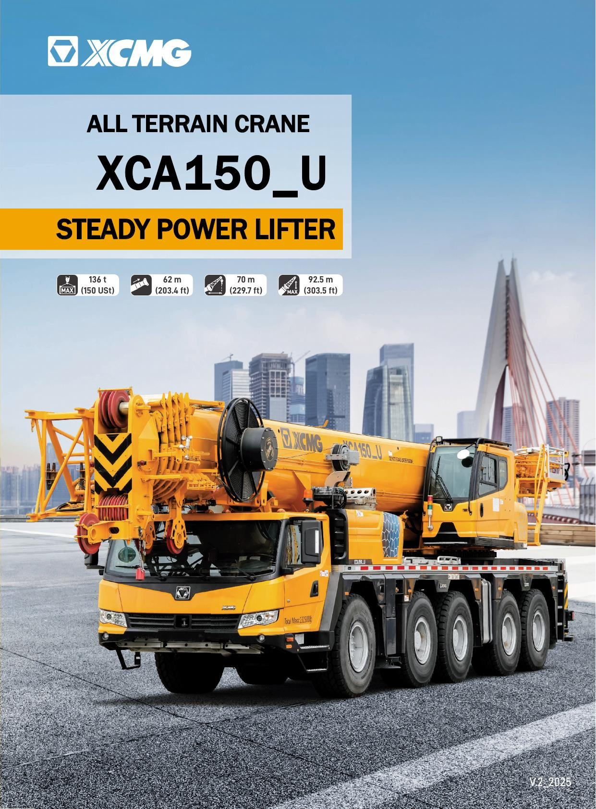

XCMG ARC CRANE BENCHMARK
XCMG XCA150U 150t 起重机竞品对标
按同吨级比较运输、底盘机动、主副臂、支腿、动力、卷扬、起重性能、作业速度和标选配状态，所有结论保留原始值与缺失状态。

对标概览
7对标产品数
—XCMG 参数竞争力
暂不排名参数排名
66%XCMG 参数覆盖率
评价边界
参数按当前吨级内同口径、方向归一化，八类权重合计 100%；配置仅在状态明确时按无配置 0、选配 60、标配 100 计入。当前配置有效覆盖率低于 60% 时，不生成综合总分和综合排名。
吨级市场与竞争定位
150吨级全地面起重机聚焦风电、能源、工业安装和大型基础设施。材料覆盖重点区域、客户任务、XCA150_U参配对比，以及安全、人性化、配重适应性、可靠性和伸缩效率的实机评价。先明确该吨级在北美起重机产品线中的需求位置、主流产品范围和竞争边界，再进入具体产品比较。
占比11.9%，按客户需求推进，暂不布局
全地面起重机。
全地面起重机占起重机产品线销量19.2%，主流吨级包括60吨、110吨、150吨、275吨、300吨，主需求110吨以上产品，400吨及以上大吨位产品专项分析(专项报告)，重点论证美国中部风电市场、大型基建等施工需求。
占比16.1%，论证布局一款；XCA70_U（论证）；需求占比18.3%，计划对现有百吨级换代，布局2款；XCA90_U（论证）；XCA100_U（论证）；占比约19.3%；布局1款；XCA150_U。
占比约7.2%；销量较低；暂不布局；占比19.4%；XCA275_U；占比7.9%；XCA350_U。
0-50.9
51.0-65.9
66.0-90.9
91.0-110.9
111.0-150.9
151.0-219.9
220.0-299.9
300.0-399.9
>=400.0
2022202320242024年增长率
区域需求与典型施工任务
按区域产业、气候、法规和施工任务展示真实应用条件，并把现场影像与对应作业要求放在同一处阅读。
美国南中部市场与工况
全地面起重机100-150吨产品段。
德克萨斯州、路易斯安那州、俄克拉荷马州、阿肯色州，区域特点：油气产业密集、工业设施安装维护需求大。
| 吨级 | 徐工型号 | 是否通用场景 | 施工场景 | 施工场景工况描述 | 客户群 | 主要客户需求特点 | 竞品及型号 | 工况满足性分析 |
|---|---|---|---|---|---|---|---|---|
| 150 吨及以下 | XCA150_U | 是 | 油田施工 | 油田设备：油田一般集中在美国南部、加拿大西部等，从事开采设备、油罐吊装，起重量一般在几吨到几十吨不等。 管线吊装：连续作业，将油管或线缆吊装，插入油井。 | 油田施工单位 租赁公司 | ①油田设备吊装臂长一般在30m-40m，一般不超过50吨，罐体吊装需求主副卷同步作业； ②连续油管或线缆吊装，对回转控制要求高； ③等待作业长，需求电动空调安静舒适的环境。 | LTM 1130-5.1 | 作业工况可以覆盖，具备下列优势： ① 根据油田吊装工况进行优化设计，主副卷同步作业功能满足油田罐体等设施吊装； ② 回转比例制动技术，解决客户在管路吊装时回转操控需求。 |
| XCA150_U | 否 | 建筑施工 | 建筑施工包括结构施工、屋顶修缮、高层建筑空调吊装、厂房和仓库施工等，在建筑高度达到90m以上时，百吨级不再满足，需更大吨位产品。 | 施工单位 租赁公司 | ①作业高度要求较高，高层建筑一般在25m以下，大型城市高层建筑可以达到90-100m ②城市施工时，道路法规要求严格，需要板车托运平衡重。 | LTM 1130-5.1 | 作业工况可以覆盖， ①中长臂性能，性能覆盖竞争对手5%以上 需配置三轴Dolly小车，②可满足当地上路许可，上路经济性好。 | |
| XCA150_U | 是 | 厂房和设备吊装 | 厂房和设备吊装，包括厂房建设维护、厂房内部设施吊装，户外工业设备吊装等。 | 施工单位 租赁公司 | ①厂房建筑维护时，臂长长，幅度大、对吊重量要求低。 ②厂房内部吊装时，需求低角度吊装，满足带载伸缩工况； ③工业设施吊装大部分工况为中长臂工况，对起升高度要求不高，设备安装要求操纵精准 | LTM 1130-5.1 | 作业工况可以覆盖，但有需提升项次 ①具备可变位平衡重，支腿可变支撑，满足不同作业空间需求。 ②具备主臂低角度吊装能力，但是带载伸缩性能缺失； ③ 中长臂性能覆盖安装需求。 |
美国东北部市场与工况
全地面起重机100-150吨产品段。
马萨诸塞州、缅因州、新罕布什尔州等，区域特点：城市密集，作业空间狭小，老城区翻新改造多。
| 吨级 | 徐工型号 | 是否通用场景 | 施工场景 | 施工场景工况描述 | 客户群 | 主要客户需求特点 | 竞品及型号 | 工况满足性分析 |
|---|---|---|---|---|---|---|---|---|
| 150 吨及以下 | XCA150_U | 是 | 城区建筑和房屋改造 | 城市道路狭窄，项目位于历史城区，常需更换屋顶结构、HVAC系统、电梯井道组件等，作业空间有限，需非对称支腿布置、精准操控。 | 油田施工单位 租赁公司 | ① 拆装方便、机动性强，便于穿街过巷作业 ② 要求吊装能力稳定，具备不对称支腿支撑能力 ③ 希望配置远程操控功能，提升效率和安全性 | LTM 1130-5.1 | 作业工况可以覆盖： ① XCA150_U臂长覆盖好、伸缩精准，适合城市楼顶吊装 ② 具备支腿可变支撑，提升安全和操作便利。 |
| XCA150_U | 否 | 城市基础设施维护吊装 | 城市道路、高架桥、隧道设施桥梁吊装作业，部分需夜间作业或封闭道路期间完成，要求高。 | 施工单位 租赁公司 | ① 吊装频率高、持续时间短，对设备调动效率要求高 ② 能通过城市通行限制、适配各类辅助吊装任务 ③ 希望设备操作简单、维护方便 | LTM 1130-5.1 | 作业工况可覆盖： ①整机+Dolly可满足上路行驶和转场需求，②操作设置简便，具备吊装监控，方便实用，有效提升运营效率与安全水平。 | |
| XCA150_U | 是 | 各类设备吊装 | 医院、学校空调更换、楼顶管道吊装、净化设备吊装、模块机房组装等常见作业，吊装高度常在25–40m之间，施工空间受限，作业窗口短，需快速布置和高效完工。 | 施工单位 租赁公司 | ① 协调进场便捷、布置迅速 ② 吊装作业高效、操作直观 ③ 能满足狭小空间下的重物精准定位需求 | LTM 1130-5.1 | 作业工况可以覆盖 作业高度、精准操控和臂头影像可视系统满足短时集中施工需求。 |
美国中西上部市场与工况
全地面起重机100-150吨产品段。
明尼苏达州、威斯康星州、密歇根州、伊利诺伊州，区域特点：制造业集中，工业厂房密集，能源基础设施老旧。
| 吨级 | 徐工型号 | 是否通用场景 | 施工场景 | 施工场景工况描述 | 客户群 | 主要客户需求特点 | 竞品及型号 | 工况满足性分析 |
|---|---|---|---|---|---|---|---|---|
| 150 吨及以下 | XCA150_U | 是 | 基础设施改造施工 | 用于桥梁维修、市政供暖管线吊装、铁路电气化设备更换、高架通风设施安装等，常涉及夜间作业或节假日施工，工期紧张，调度频繁。 | 油田施工单位 租赁公司 | ①作业场地多为道路上方或高架平台下，空间狭小、支腿展开受限；②调度周期短、频繁转场，需道路通过性强；③夜间/低温施工要求液压系统响应灵敏 | LTM 1130-5.1 | 适配度高，优势如下：①支持支腿多跨距组合展开，适应高架下吊装环境； ②整车机动性强，可快速调往多个项目点； ③低温液压性能稳定，满足冬季市政工况需求 |
| XCA150_U | 否 | 设备搬运与更换 | 制造厂房设备吊装与搬迁，空压机、注塑机、模具等设备频繁更换，作业环境为厂房内部或厂房门前狭小空间，对整车通过性、吊重性能、支腿展开空间要求较高。 | 施工单位 租赁公司 | ①作业场地空间紧张，需良好通过性与小转弯半径 ②复合动作要求高，包括变幅+卷扬等多种操作，对吊装精度要求高； | LTM 1130-5.1 | 作业工况覆盖广，具备下列优势： ①整机配备可变位平衡重、支腿可变支撑，满足车间内狭窄区域作业； ②复合动作满足工况需求，作业精准，设备就位效率高。 | |
| XCA150_U | 是 | 建筑与市政施工 | 包括高层建筑顶层设备更换、室外电梯、广告塔、通讯基站吊装，部分用于高架桥箱梁拼装等，城市工况占比高。 | 施工单位 租赁公司 | ①作业场地在市区道路、建筑间隙内，吊装半径大但空间狭小； ②施工频繁调场，需跨州快速通行； | LTM 1130-5.1 | 全维度匹配，具备下列优势： ①工作幅度广，主臂+副臂组合作业适应高空建筑改造； ②车宽3米以内，满足市区交通要求； |
加拿大草原省份市场与工况
全地面起重机100-150吨产品段。
阿尔伯塔、萨斯喀彻温以及包括部分BC省，区域特点：自然资源丰富、能源与基建项目密集，气候变化大。
| 吨级 | 徐工型号 | 是否通用场景 | 施工场景 | 施工场景工况描述 | 客户群 | 主要客户需求特点 | 竞品及型号 | 工况满足性分析 |
|---|---|---|---|---|---|---|---|---|
| 150 吨及以下 | XCA150_U | 是 | 油气处理设施设备吊装 | 油田开采设备、油罐吊装，臂长一般在30m-40m，起重量从几吨到几十吨不等，一般不超过50吨，对幅度10-30m起重量要求高。 连续油管或线缆吊装，插入油井中，对起重量要求不高，作业不间断 | 油田施工单位 租赁公司 | ①设备体积大、重心高，需高稳定性吊装；②山地丘陵或油田区作业，场地通过性要求高；③冬季施工多，需抗寒性强；④多工序联动作业，需定位精准 | LTM 1160-5.2 | 适配度高，优势如下：①主臂强度高、伸缩平顺； ②多桥驱动+全轮转向通过性强，适应复杂场地；③液压控制精准，寒区表现优良 |
| XCA150_U | 否 | 高压电力塔施工与设备更换 | 在山区或丘陵地带安装或更换电力铁塔部件、升压站变压器、导线牵引设备等，吊重5–15吨，吊装高度20–50米，需长距离行驶进入山区，部分作业点需夜间作业。 | 施工单位 租赁公司 | ①需在崎岖道路长距离转场，要求公路/越野适应性强；②有夜间吊装或低温作业需求；③吊装精度要求高，须配合其他施工机械配合精准作业 | LTM 1160-5.2 | 作业工况可以覆盖： ①整机+Dolly满足加拿大法规，可上路行驶， ②起重精度高，适合高空部件定位； 具备低温启动功能，低温适应能力强。 | |
| XCA150_U | 是 | 公共能源设施模块吊装 | 吊装燃气热力模块、大型HVAC系统、预制泵站等建筑能源设备，通常在城市边缘能源中心或工厂旁边进行，设备位置受限、调场频繁、对作业稳定性要求高。 | 施工单位 租赁公司 | ①设备常集成于标准集装箱内，需精准对位就位；②场地空间小，支腿展开受限；③作业频率高，设备需调度灵活；④部分项目与建筑结构相连，要求吊装安全等级高 | LTM 1160-5.2 | 作业工况可以覆盖： ①主臂覆盖主流安装； ②狭窄场地支腿多跨距组合； ③整车转弯半径小，进出场地灵活； ④吊重稳定，操控性好。 |
参数、配置与实机评价
把纸面参数与配置对比、客户使用反馈和实机观察分开呈现，避免将参数优势直接等同于现场表现。
徐工型号XCA150_U
全地面起重机100-150吨产品段。
徐工型号XCA150_U：在售主打产品XCA150_U在显性参数和配置方面优于竞争对手，在产品操控性能、作业效率方面对比标杆仍需优化提升。
| 项目 | 主要参数 | 徐工 XCA150_U | LB LTM 1130-5.1 | 结论 | 客户对于关键参配的喜好 | 用户口碑 |
|---|---|---|---|---|---|---|
| 主要 参数 | 主臂节数 | 6节 | 6节 | 徐工臂长和作业性能高于竞品10%-15%，作业范围和作业能力覆盖竞品。 | 市场客户对徐工作业性能和工况覆盖能力认可，整机吊装稳定，工况适应性强。 | 徐工口碑： 徐工全地面起重机很结实，干活稳，性能很高，功能配置很多用着不错，但是刚接车时小毛病会有一些，伸臂有点慢。 |
| 主臂结构 | U型 | U型 | ||||
| 主臂臂长 | 62m | 60m | ||||
| 副臂臂长 | 18.5m+14m | 19m+14m | ||||
| 起升速度（空载） | 130m/min | 110m/min | 徐工作业效率除伸缩速度外均优于竞争对手 | 客户需求高效操作系统，同时要求操作精准、平顺。 | ||
| 回转速度 | 1.6r/min | 1.5r/min | ||||
| 伸缩速度 | 550s | 390s | ||||
| 变幅速度 | 55s | 65s | ||||
| 轴荷 | ≤9吨(带3轴Dolly) | ≤9吨(带3轴Dolly) | 上路行驶经济性相当，均需申请年度上路许可 | 需求在满足道路许可重量前提下可以搭载更多配置，获取更高的作业能力。 | ||
| 配置 | 发动机品牌 | 奔驰 | LIEBHERR | 规格/配置相当，性能相当 | 北美当地客户需求欧美主流品牌配置，更倾向于当地品牌的供应链。 | |
| 变速箱品牌 | ZF | ZF | ||||
| 技术路线 | 双电控变量柱塞泵+阀前补偿多路阀 | 电子负载敏感技术 | 两者技术路线不同，在卷扬操控性能上调速性能优于LB，回转操作性能上略低于LB。 | 客户倾向操控性能优越的产品，在产品操控微动性、平顺性上要求高，满足重载精准吊装的需求。 | ||
| 主泵规格 | 力源L11双变量泵 | 力士乐A11单变量泵 | ||||
| 起升系统 | 变量马达 | 定量马达 | ||||
| 伸缩系统 | 单缸插销 | 单缸插销 | ||||
| 变幅系统 | 重力下落 | 重力下落 | ||||
| 回转系统 | 比例制动 | 比例制动 | ||||
| 智能化 | 支腿可变支撑 | 支腿可变支撑等 | 具备可变位平衡重等功能配置，工况适应性更强。 | 客户需求更加智能，简便的系统，要求产品工况适应性强，满足典型施工场景吊装需求。 | ||
| 适应性配置 | 可变位平衡重、电动空调 | 无 |
徐工型号XCA150_U
全地面起重机100-150吨产品段。
徐工型号XCA150_U：由于徐工全地面起重机在同一技术平台G1平台上研发，均采用相同的技术路线，因此在产品六性上表现基本一致，以XCA150_U对比分析如下。
| 对比方向 | 对比维度 | 对比项目 | 徐工 | LB | 对比结论 | 提升方向 | 用户口碑 |
|---|---|---|---|---|---|---|---|
| XCA150_U | LTM 1130-5.1 | ||||||
| 核心性能指标 | 经济性 | 作业性能 | 性能性能高于竞品约5%。 | 作业性能略低 | 徐工起重机作业性能高于竞品10%，油耗水平略低于竞争对手。 | 降低待机油耗水平 | 徐工口碑： 徐工全地面起重机很结实，干活稳，性能很高，功能配置很多用着不错，但是刚接车时小毛病会有一些，另外伸臂有点慢，我在油田干活，特别是吊装连续管线对回转要求很高，回转精度控制更准点就完美了。 品牌2口碑： 利勃海尔车很可靠、我新买这台车功能很先进，智能化程度很高。 |
| 产品售价 | 价格低于竞品15%左右 | 一线产品价格 | |||||
| 可靠性 | 反馈率 | 早期故障率略高，反馈集中在控制程序、电气零部件问题 | 早期故障主要反馈 回转动作不好 | 徐工早期故障略多于竞品，随着设计质量提升，早期故障下降明显 | 重点提升电气系统可靠性、控制程序功能安全性、显示程序操作便捷性。 | ||
| 环境适应性 | 温度 | -30℃~45℃ | -30℃~45℃ | 环境适应性基本相当 | —— | ||
| 操控性 | 作业平顺性 | 整体动作品顺， 回转停止需进一步提升 | 上车作业和下车行驶操控性能更优，特别是复合动作优于徐工产品。 | 徐工整体操控性基本满足市场需求，但在回转启停平稳性、变幅落和伸缩速度、复合动作上需提升。 | 优化提升回转启停平稳性、变幅落和伸缩速度、复合动作操控性。 | ||
| 舒适性 | 声舒适性 | 司机耳旁噪音：77db | 司机耳旁噪音：68db | 徐工噪音水平略高，但徐工选配电动空调，操纵更舒适。 | 降低整机作业噪音水平 | ||
| 人体姿态舒适性 | 选配电动空调功能 | 无电动空调 | |||||
| 安全性 | 力限器精度 | 高精力限器系统，重载误差在3%以内，具有系统故障提示 | 力限器显示精度高，故障代码完善。 | 徐工作业安全符合法规要求，和竞品相当 | —— | ||
| 环保性 | 作业油耗 | 非道路四阶段，待机油耗略高10-15%，其他工况油耗相当 | 非道路四阶段，待机油耗低，其他工况油耗水平相当 | 排放均为非道路四阶段，徐工油耗略高于竞品 | 降低待机油耗水平 | ||
| 产品细节 | 人机交互 | 徐工人机交互面板品质更高，但整机油漆细节存在不足 | 操作面板和功能布局存在不足，整机外观和细节涂装质量好 | 徐工产品细节略差 | 重点提升涂装和油漆喷涂质量 | ||
| 软文资料 | —— | 资料基本完善，但操维、保养培训资料存在不足 | 售前售后资料完善，培训体系健全 | 徐工软文资料存在不足 | 完善产品操维、保养培训资料。 |
徐工型号XCA150_U客户使用评价对标
全地面起重机150吨产品。
徐工型号XCA150_U客户使用评价对标：徐工150吨全地面的安全性、人性化配置、可变位平衡重工况适应性方面上优于竞争对手，但在可靠性上、伸缩效率等方面和对手相比存在一定劣势。
| 对比方向 | 对比维度 | 对比项目 | 徐工 | LB | 竞品对标图片 | 对比结论 | 提升方向 |
|---|---|---|---|---|---|---|---|
| XCA150_U | LTM 1130-5.1 | ||||||
| 核心性能指标 | 可靠性 | 整机稳定性 | 额定载荷下在侧方和后方、斜后方作业时支腿无松动。 | 吊臂在后方作业时，前方支腿未松动。吊臂侧方作业时，后方支腿轻微松动。 | 水平相当 | 无 | |
| 主臂伸缩 平顺性 | 全伸臂主臂仰角70°，主臂位于车辆后方时，伸缩平顺，冲击小噪音不大。 | 全伸臂主臂仰角70°，主臂位于车辆后方时，伸缩平顺，无冲击且噪音低。 | 水平相当 | 无 | |||
| 安全性 | 安全性配置 | 配置有卷扬摄像装置、臂头摄像装置、倒车影像等安全装置 | 无臂头摄像装置和倒车影像装置 | 徐工产品安全保护装置优于竞品 | 无 |
徐工型号XCA150_U客户使用评价对标
全地面起重机150吨产品。
徐工型号XCA150_U客户使用评价对标：徐工150吨全地面的安全性、人性化配置、可变位平衡重工况适应性方面上优于竞争对手，但在可靠性上、伸缩效率等方面和对手相比存在一定劣势。
| 对比方向 | 对比维度 | 对比项目 | 徐工 | LB | 竞品对标图片 | 对比结论 | 提升方向 |
|---|---|---|---|---|---|---|---|
| XCA150_U | LTM 1130-5.1 | ||||||
| 核心性能指标 | 舒适性 | 操纵室 | 全钢操纵室，可调节座椅，配有前挡风玻璃、雨刮、天窗可拆卸、冷暖空调，内置风扇，灭火器、手机支架和水杯支架等配置。 | 全钢结构操纵室，可调节座椅，安装有单轴操纵手柄，配有前挡风玻璃、雨刮、侧面门窗防护，制冷空调和柴油加热除霜装置，内置风扇，灭火器等配置。 | 徐工操纵室配置优于竞品，人性化配置较多 | 无 | |
| 操纵室外宽加大，座椅内宽增至520mm，驾乘空间加大，优化内部仪表、电气布局，增加腿部、座椅前后滑动空间，操纵室可翻转，使用较为便捷。 | 操纵室内部空间较大，腿可伸直。显示器角度和位置可调，操纵室可翻转，使用较为便捷。 | 徐工内部空间与操作方便性与竞品相当。 | 无 | ||||
| 通道 | 车辆底盘共配置前后左右4个爬梯，上车两侧各配有爬梯，常用扶梯配置高扶手，三点支撑更人性化，方便爬上趴下。上车爬梯为阶梯，方便攀爬，更安全，给人如履平地的感觉。 | 优点为车辆两侧各配有爬梯，底盘爬梯没有扶手，人性化不足；上车无专门攀爬通道，通道无扶手，安全性和方便性较差。 | 徐工通道优于竞品，扶手和阶梯设计设计更加人性化 | 无 | |||
| 维护保养 | 整机维护保养较为便捷，整机集中润滑，座椅前后滑动行程增加100mm，提升座椅后部检修空间。 | 整机维护保养较为便捷，操纵室内部检修空间较大比较方便。 | 徐工和竞品维护保养水平基本相当。 | 无 |
徐工型号XCA150_U客户使用评价对标
全地面起重机150吨产品。
徐工型号XCA150_U客户使用评价对标：徐工150吨全地面的安全性、人性化配置、可变位平衡重工况适应性方面上优于竞争对手，但在可靠性上、伸缩效率等方面和对手相比存在一定劣势。
| 对比方向 | 对比维度 | 对比项目 | 徐工 | LB | 竞品对标图片 | 对比结论 | 提升方向 |
|---|---|---|---|---|---|---|---|
| XCA150_U | LTM 1130-5.1 | ||||||
| 核心性能指标 | 便捷性 | 支车收车 | 支车收车便捷性：可通过无线遥控操作卷扬固定吊钩 | 支车收车便捷性：在收车时，可通过无线遥控操作卷扬，进而固定吊钩。 | 徐工和竞品基本相当 | 无 | |
| 作业效率 | 主臂伸臂时长580s，变幅时长65s。 | 主臂伸臂时长400s，变幅时长48s。 | 徐工作业效率弱于竞争对手 | 建议后续论证提升吊臂伸缩和变幅速度。 | |||
| 变位平衡重 | 平衡重前位，转弯半径更小，平衡重后位，起重性能更高。智能适应各种工况需求，尤其满足狭小空间作业需求。 | 无平衡重变位功能 | 徐工产品优于竞品 | 无 |
产品定位与推进计划
保留资料形成时的价格定位、销量目标和产品计划；规划内容仅作为决策输入，不代表已经上市或完成验证。
对比结论
全地面起重机100-150吨产品段；对比结论：。
1、结合对适应性和核心竞争力对比分析，徐工全地面起重机在整机作业性能、功能配置等方面相较竞品有优势，但考虑徐工起重机在高端市场突破初期，在适应性、可靠性和操控性与标杆竞争上还需一定提升周期，定位价格低于行业标杆10%左右；
2、结合竞争力优势分析，2025年该产品段的市场目标为全地面起重机产品线销量达到2台，相比2024年销售收入翻2倍。
150吨全地面起重机售价分析。
价格与市场位置对比
横轴为资料记录售价指标，纵轴为对应市场占有率；悬停或聚焦点位可查看数值。
徐工 XCA150_U133.0 / 1.0%利勃海尔 LTM 1130-5.1146.0 / 57.7%
| 150吨 | 徐工 XCA150_U | LB LTM 1130-5.1 | |
|---|---|---|---|
| 销售价格/万美元 | 133 | 146 | |
| 占有率/% | 1% | 57.7% |
工况竞争全景
热力矩阵覆盖全部适用工况和全部产品；雷达仅使用完整可比数据。工况卡片先说明排名资格、关键输入和资料覆盖，再进入逐工况参数、配置、差距与提升模拟。
阅读边界
本场景将可追溯参数与配置组合为纸面适配性对比，不替代现场吊装方案、同口径载荷表复核或实机验证。
贡献分仅表示该指标在当前工况权重下的作用，不等于整机性能的独立结论；提升模拟只使用已有可比字段，不自动假设缺失数据、工程可行性或成本。
至少需要 3 类工况和 2 个数据完整的产品，当前仅展示下方热力矩阵。
产品 × 工况热力矩阵
XCMG XCA150U道路运输—不排名快速转场—不排名场地机动—不排名狭窄调位—不排名近幅重载—不排名中幅安装—不排名长臂高空—不排名副臂远幅—不排名不平地面—不排名部分支腿—不排名循环效率—不排名精密维保—不排名全天候作业—不排名城市公用设施—不排名工业停机检修—不排名道路桥梁安装—不排名应急抢险—不排名港口堆场—不排名
Tadano GR-1300XL-4道路运输—不排名快速转场—不排名场地机动—不排名狭窄调位—不排名近幅重载—不排名中幅安装—不排名长臂高空—不排名副臂远幅—不排名不平地面—不排名部分支腿—不排名循环效率—不排名精密维保—不排名全天候作业—不排名城市公用设施—不排名工业停机检修—不排名道路桥梁安装—不排名应急抢险—不排名港口堆场—不排名
Grove GRT8120道路运输—不排名快速转场—不排名场地机动—不排名狭窄调位—不排名近幅重载—不排名中幅安装—不排名长臂高空—不排名副臂远幅—不排名不平地面—不排名部分支腿—不排名循环效率—不排名精密维保—不排名全天候作业—不排名城市公用设施—不排名工业停机检修—不排名道路桥梁安装—不排名应急抢险—不排名港口堆场—不排名
Link-Belt 120RT道路运输—不排名快速转场—不排名场地机动—不排名狭窄调位—不排名近幅重载—不排名中幅安装—不排名长臂高空—不排名副臂远幅—不排名不平地面—不排名部分支腿—不排名循环效率—不排名精密维保—不排名全天候作业—不排名城市公用设施—不排名工业停机检修—不排名道路桥梁安装—不排名应急抢险—不排名港口堆场—不排名
Liebherr LRT1130-2.1道路运输—不排名快速转场—不排名场地机动—不排名狭窄调位—不排名近幅重载—不排名中幅安装—不排名长臂高空—不排名副臂远幅—不排名不平地面—不排名部分支腿—不排名循环效率—不排名精密维保—不排名全天候作业—不排名城市公用设施—不排名工业停机检修—不排名道路桥梁安装—不排名应急抢险—不排名港口堆场—不排名
Zoomlion ZRT1300V道路运输—不排名快速转场—不排名场地机动—不排名狭窄调位—不排名近幅重载—不排名中幅安装—不排名长臂高空—不排名副臂远幅—不排名不平地面—不排名部分支腿—不排名循环效率—不排名精密维保—不排名全天候作业—不排名城市公用设施—不排名工业停机检修—不排名道路桥梁安装—不排名应急抢险—不排名港口堆场—不排名
Sany SRA1200A道路运输—不排名快速转场—不排名场地机动—不排名狭窄调位—不排名近幅重载—不排名中幅安装—不排名长臂高空—不排名副臂远幅—不排名不平地面—不排名部分支腿—不排名循环效率—不排名精密维保—不排名全天候作业—不排名城市公用设施—不排名工业停机检修—不排名道路桥梁安装—不排名应急抢险—不排名港口堆场—不排名
绿色表示可比结果较强，黄色表示中间区间，红色表示相对较弱；灰色表示证据不足，资料未记录，不按0分处理。
工程能力工况
按单一作业能力拆解参数、配置、排名和差距。
道路运输
—证据不足，暂不排名
- 关键参数
- 最小运输重量、单轴载荷、12t 轴荷条件随车配重
- 有益配置
- 牵引钩
快速转场
—证据不足，暂不排名
- 关键参数
- 可拆卸配重、配重组合数量、12t 轴荷条件随车配重
- 有益配置
- 牵引钩、集中自动润滑系统
场地机动
—证据不足，暂不排名
- 关键参数
- 最高行驶速度、最小转弯半径、转向模式数量
- 有益配置
- 轮胎选项包
狭窄调位
—证据不足，暂不排名
- 关键参数
- 最小转弯半径、尾部回转半径、主臂基本臂长度
- 有益配置
- 360° 上车机械锁止、卷扬与臂架自动控制
近幅重载
—证据不足，暂不排名
- 关键参数
- 无专用附件最大起重量、主臂 5m 幅度起重量、主卷扬最大单绳拉力
- 有益配置
- 短型重载副臂、卷扬与臂架自动控制
中幅安装
—证据不足，暂不排名
- 关键参数
- 主臂 20m 幅度起重量、主卷扬最大单绳拉力、主卷扬最大绳速
- 有益配置
- 卷扬与臂架自动控制
长臂高空
—证据不足，暂不排名
- 关键参数
- 主臂全伸长度、主臂最大额定幅度、主臂 40m 幅度起重量
- 有益配置
- 卷扬与臂架自动控制
副臂远幅
—证据不足，暂不排名
- 关键参数
- 随车携带最大副臂长度、副臂延伸节数量、基本副臂 30m 幅度起重量
- 有益配置
- 短型重载副臂、卷扬与臂架自动控制
不平地面
—证据不足，暂不排名
- 关键参数
- 支腿全伸跨度、支腿伸缩档位数量
- 有益配置
- 2° 倾斜工况载荷表、360° 上车机械锁止
部分支腿
—证据不足，暂不排名
- 关键参数
- 支腿全伸跨度、支腿伸缩档位数量、尾部回转半径
- 有益配置
- 2° 倾斜工况载荷表、360° 上车机械锁止
循环效率
—证据不足，暂不排名
- 关键参数
- 主卷扬最大单绳拉力、副卷扬最大单绳拉力、主卷扬最大绳速
- 有益配置
- 卷扬与臂架自动控制、集中自动润滑系统
精密维保
—证据不足，暂不排名
- 关键参数
- 主卷扬最大绳速、副卷扬最大绳速、回转速度
- 有益配置
- 卷扬与臂架自动控制、360° 上车机械锁止
全天候作业
—证据不足，暂不排名
- 关键参数
- 发动机功率、发动机扭矩、燃油箱容量
- 有益配置
- 集中自动润滑系统、发动机燃油加热器
典型施工场景
把多个工程能力组合到真实任务中；属于纸面适配性对比，不替代现场试吊。
城市公用设施
—证据不足，暂不排名
- 关键参数
- 最小转弯半径、尾部回转半径、主臂基本臂长度
- 有益配置
- 360° 上车机械锁止、卷扬与臂架自动控制
工业停机检修
—证据不足，暂不排名
- 关键参数
- 主臂 20m 幅度起重量、主臂 40m 幅度起重量、副卷扬最大单绳拉力
- 有益配置
- 卷扬与臂架自动控制、免润滑主臂
道路桥梁安装
—证据不足，暂不排名
- 关键参数
- 最小转弯半径、最大爬坡度、支腿全伸跨度
- 有益配置
- 2° 倾斜工况载荷表、卷扬与臂架自动控制
应急抢险
—证据不足，暂不排名
- 关键参数
- 最高行驶速度、最小转弯半径、最大爬坡度
- 有益配置
- 牵引钩、卷扬与臂架自动控制
港口堆场
—证据不足，暂不排名
- 关键参数
- 最高行驶速度、最小转弯半径、主卷扬最大单绳拉力
- 有益配置
- 卷扬与臂架自动控制、集中自动润滑系统
本吨级实机评价结论
同一实机观察只在此汇总一次，并标明影响的工况，避免在逐工况分析中重复出现。
历史客户评价显示安全性、人性化配置和可变位平衡重适应性较强；可靠性和伸缩效率相对标杆仍有差距。
关联工况：道路运输 / 轴荷与外廓合规、场地进出 / 越野机动、近幅度 / 重载吊装、支腿展开 / 不平地面稳定、部分支腿 / 受限支撑、应急抢险 / 快速响应吊装可靠性被识别为相对差距，需用故障分布、停机时间和维修可达性数据进一步拆解。
关联工况：快速拆装 / 多工地转场、连续循环 / 双卷扬协同、油气装置 / 工业停机检修可变位平衡重带来工况适应性，但伸缩效率和可靠性需与同配置标杆进行当前状态复核。
关联工况：狭窄场地 / 精细调位、中幅度 / 结构安装、长臂大幅度 / 高空安装、副臂组合 / 远幅度作业、精密落钩 / 高空维保、城市更新 / 公用设施高空作业、道路桥梁 / 基础设施构件安装、港口堆场 / 高频装卸原资料未提供150吨全地面独立环境试验数据，不应由配置状态外推整机环境能力。
关联工况：低温环境 / 全天候连续作业参数竞争位置
参数竞争力排名
竞品表头与数据范围待核验
页面仍保留全部原始参数与缺失状态，待数据补齐后再计算排名。
八类参数竞争力
当前：全部品牌工程能力工况 01
12 个参数 / 1 个配置项道路运输 / 轴荷与外廓合规
用于判断设备在州际道路运输、工地间转场和配重拆装中的合规性与组织效率。运输重量和单轴载荷决定许可与车辆组合，宽高长度决定路线限制，可拆配重、配重组合及最大配重状态行驶能力决定到场后的恢复速度。
作业执行与工程验证把纸面对比还原为可复现的现场任务
- 典型客户
- 租赁公司、经销商、大件运输承包商和跨州施工项目
- 典型吊物 / 工作对象
- 整机、配重、副臂、垫木及随车吊具
标准任务链
- 01
冻结运输配置，明确随车与拆分运输的配重、臂架和附件状态。
- 02
复核整机质量、轴荷与外廓，匹配拖车、许可和限高限宽路线。
- 03
制定配重装卸、捆扎和附件固定方案，记录需要的辅助车辆与人员。
- 04
到场后按确定配置恢复整机，完成调平、功能检查和载荷表状态确认。
- 05
记录从进场到具备首吊条件的时间，形成不同运输组合的标准节拍。
现场约束与判断边界
- 运输质量必须按实际配重和附件状态核算，不能混用空载宣传值。
- 跨州路线受轴荷、总重、宽高和桥涵限制，车辆组合不能只按总质量选择。
- 到场恢复后的载荷表、配重识别和安全装置状态必须与实际配置一致。
工程边界
运输合规不等于吊装可执行；首吊前仍须按实际站位、配重、支腿和臂架状态重新核对载荷表。
建议验证记录
记录实测结果，不虚构通过阈值运输质量与轴荷
按每种配重组合称重或使用经验证的质量分配表。
记录：总重、各轴荷、质量偏差运输外廓
在固定行驶姿态测量长、宽、高并核对路线限制。
记录：路线限制、许可类别、护送需求到场恢复
从车辆到场计时至配重、支腿、RCL和载荷表全部可用。
记录：工时、辅助车辆数、首吊准备时间牵引钩、垫木架、可拆配重和多配重组合有利于运输组织与到场恢复。
参数权重 85%，配置权重 15%。参数覆盖 39% / 配置覆盖 0%
可比指标少于 3 项，保留原值表，不绘制雷达图。
工况评分排名
有效字段不足，暂不形成该工况排名。
参数覆盖 39% / 配置覆盖 0%
全部指标 / 配置贡献明细
| 类型 | 指标 / 配置 | 工况权重 | 对工况影响 | XCMG XCA150U | Tadano GR-1300XL-4 | Grove GRT8120 | Link-Belt 120RT | Liebherr LRT1130-2.1 | Zoomlion ZRT1300V | Sany SRA1200A |
|---|---|---|---|---|---|---|---|---|---|---|
| 参数 | 最小运输重量 | 15.3% | 决定道路许可、拖车组合和轴荷余量。 | — kg指标分 —加权贡献 — | — kg指标分 —加权贡献 — | — kg指标分 —加权贡献 — | — kg指标分 —加权贡献 — | — kg指标分 —加权贡献 — | — kg指标分 —加权贡献 — | — kg指标分 —加权贡献 — |
| 配置 | 牵引钩 | 15.0% | 支持牵引救援与转场组织。 | 资料未记录指标分 —加权贡献 — | 资料未记录指标分 —加权贡献 — | 资料未记录指标分 —加权贡献 — | 资料未记录指标分 —加权贡献 — | 资料未记录指标分 —加权贡献 — | 资料未记录指标分 —加权贡献 — | 资料未记录指标分 —加权贡献 — |
| 参数 | 单轴载荷 | 12.5% | 决定道路许可、拖车组合和轴荷余量。 | — kg指标分 —加权贡献 — | — kg指标分 —加权贡献 — | — kg指标分 —加权贡献 — | — kg指标分 —加权贡献 — | — kg指标分 —加权贡献 — | — kg指标分 —加权贡献 — | — kg指标分 —加权贡献 — |
| 参数 | 带辅助小车最小运输重量 | 7.0% | 作为当前工况的量化输入，并与同吨级竞品按同一方向比较。 | — kg指标分 —加权贡献 — | — kg指标分 —加权贡献 — | — kg指标分 —加权贡献 — | — kg指标分 —加权贡献 — | — kg指标分 —加权贡献 — | — kg指标分 —加权贡献 — | — kg指标分 —加权贡献 — |
| 参数 | 运输宽度 | 7.0% | 决定路线限制、超限许可与运输组织难度。 | 3,000 mm指标分 100.0加权贡献 7.0 | — mm指标分 —加权贡献 — | — mm指标分 —加权贡献 — | — mm指标分 —加权贡献 — | — mm指标分 —加权贡献 — | — mm指标分 —加权贡献 — | — mm指标分 —加权贡献 — |
| 参数 | 10t 轴荷条件随车配重 | 5.6% | 影响运输拆分、到场装配和可用载荷表。 | — kg指标分 —加权贡献 — | — kg指标分 —加权贡献 — | — kg指标分 —加权贡献 — | — kg指标分 —加权贡献 — | — kg指标分 —加权贡献 — | — kg指标分 —加权贡献 — | — kg指标分 —加权贡献 — |
| 参数 | 12t 轴荷条件随车配重 | 5.6% | 影响运输拆分、到场装配和可用载荷表。 | 2,900 kg指标分 100.0加权贡献 5.6 | — kg指标分 —加权贡献 — | — kg指标分 —加权贡献 — | — kg指标分 —加权贡献 — | — kg指标分 —加权贡献 — | — kg指标分 —加权贡献 — | — kg指标分 —加权贡献 — |
| 参数 | 可拆卸配重 | 5.6% | 影响运输拆分、到场装配和可用载荷表。 | 42,000 kg指标分 100.0加权贡献 5.6 | — kg指标分 —加权贡献 — | — kg指标分 —加权贡献 — | — kg指标分 —加权贡献 — | — kg指标分 —加权贡献 — | — kg指标分 —加权贡献 — | — kg指标分 —加权贡献 — |
| 参数 | 最大配重行驶速度 | 5.6% | 影响运输拆分、到场装配和可用载荷表。 | — kph指标分 —加权贡献 — | — kph指标分 —加权贡献 — | — kph指标分 —加权贡献 — | — kph指标分 —加权贡献 — | — kph指标分 —加权贡献 — | — kph指标分 —加权贡献 — | — kph指标分 —加权贡献 — |
| 参数 | 运输高度 | 5.6% | 决定路线限制、超限许可与运输组织难度。 | 3,991 mm指标分 100.0加权贡献 5.6 | — mm指标分 —加权贡献 — | — mm指标分 —加权贡献 — | — mm指标分 —加权贡献 — | — mm指标分 —加权贡献 — | — mm指标分 —加权贡献 — | — mm指标分 —加权贡献 — |
| 参数 | 运输长度 | 5.6% | 决定路线限制、超限许可与运输组织难度。 | 15,601 mm指标分 100.0加权贡献 5.6 | — mm指标分 —加权贡献 — | — mm指标分 —加权贡献 — | — mm指标分 —加权贡献 — | — mm指标分 —加权贡献 — | — mm指标分 —加权贡献 — | — mm指标分 —加权贡献 — |
| 参数 | 带辅助小车单轴载荷 | 5.6% | 决定道路许可、拖车组合和轴荷余量。 | — kg指标分 —加权贡献 — | — kg指标分 —加权贡献 — | — kg指标分 —加权贡献 — | — kg指标分 —加权贡献 — | — kg指标分 —加权贡献 — | — kg指标分 —加权贡献 — | — kg指标分 —加权贡献 — |
| 参数 | 配重组合数量 | 4.2% | 影响运输拆分、到场装配和可用载荷表。 | 9指标分 100.0加权贡献 4.2 | —指标分 —加权贡献 — | —指标分 —加权贡献 — | —指标分 —加权贡献 — | —指标分 —加权贡献 — | —指标分 —加权贡献 — | —指标分 —加权贡献 — |
工程能力工况 02
8 个参数 / 2 个配置项快速拆装 / 多工地转场
用于判断租赁设备在连续多工地任务中的拆装、配重转换和到场恢复效率。可拆配重、配重组合、随车配重能力和带配重行驶速度决定转场拆分方案；牵引钩、垫木架和集中润滑影响现场准备及非生产停机时间。
作业执行与工程验证把纸面对比还原为可复现的现场任务
- 典型客户
- 租赁公司、工业检修承包商、设备安装与多工地施工团队
- 典型吊物 / 工作对象
- 配重、垫木、吊钩、副臂、索具与日常维护物料
标准任务链
- 01
接收任务后锁定吊重、幅度、站位与下一工地距离，选择最少拆分的合规配置。
- 02
按标准清单装载垫木、索具和附件，避免到场后二次调货。
- 03
完成配重转换、附件固定和道路检查，记录拆装步骤及人工。
- 04
到场后调平、展开支腿、完成班前检查并加载正确工况。
- 05
以首吊准备时间和收车时间复盘非生产停机。
现场约束与判断边界
- 快速转场不能省略配置确认、班前检查和支腿地基复核。
- 随车附件越完整，运输质量和轴荷压力越大，需要同时优化而非单项追求。
- 现场节拍应把等待辅助吊、配重车和垫木的时间单独记录。
工程边界
节拍必须在满足制造商程序和安全检查的前提下比较，不能把省略步骤形成的时间优势计入产品能力。
建议验证记录
记录实测结果，不虚构通过阈值拆装步骤
逐步记录配重、附件和支腿准备动作。
记录：步骤数、人工、工具与辅助设备转场准备
连续执行收车、运输、到场恢复的完整演练。
记录：收车时间、首吊准备时间维护停机
按班次记录润滑、加注和日检所需时间。
记录：分钟/班、漏项与返工可拆配重、多配重组合、随车垫木架、牵引钩和集中润滑可减少拆装、等待和跨工地准备时间。
参数权重 78%，配置权重 22%。参数覆盖 60% / 配置覆盖 38%
可比指标少于 3 项，保留原值表，不绘制雷达图。
工况评分排名
有效字段不足，暂不形成该工况排名。
参数覆盖 60% / 配置覆盖 38%
全部指标 / 配置贡献明细
| 类型 | 指标 / 配置 | 工况权重 | 对工况影响 | XCMG XCA150U | Tadano GR-1300XL-4 | Grove GRT8120 | Link-Belt 120RT | Liebherr LRT1130-2.1 | Zoomlion ZRT1300V | Sany SRA1200A |
|---|---|---|---|---|---|---|---|---|---|---|
| 参数 | 可拆卸配重 | 17.2% | 影响运输拆分、到场装配和可用载荷表。 | 42,000 kg指标分 100.0加权贡献 17.2 | — kg指标分 —加权贡献 — | — kg指标分 —加权贡献 — | — kg指标分 —加权贡献 — | — kg指标分 —加权贡献 — | — kg指标分 —加权贡献 — | — kg指标分 —加权贡献 — |
| 参数 | 配重组合数量 | 14.0% | 影响运输拆分、到场装配和可用载荷表。 | 9指标分 100.0加权贡献 14.0 | —指标分 —加权贡献 — | —指标分 —加权贡献 — | —指标分 —加权贡献 — | —指标分 —加权贡献 — | —指标分 —加权贡献 — | —指标分 —加权贡献 — |
| 配置 | 牵引钩 | 13.5% | 支持牵引救援与转场组织。 | 资料未记录指标分 —加权贡献 — | 资料未记录指标分 —加权贡献 — | 资料未记录指标分 —加权贡献 — | 资料未记录指标分 —加权贡献 — | 资料未记录指标分 —加权贡献 — | 资料未记录指标分 —加权贡献 — | 资料未记录指标分 —加权贡献 — |
| 参数 | 12t 轴荷条件随车配重 | 9.4% | 影响运输拆分、到场装配和可用载荷表。 | 2,900 kg指标分 100.0加权贡献 9.4 | — kg指标分 —加权贡献 — | — kg指标分 —加权贡献 — | — kg指标分 —加权贡献 — | — kg指标分 —加权贡献 — | — kg指标分 —加权贡献 — | — kg指标分 —加权贡献 — |
| 参数 | 最大配重行驶速度 | 9.4% | 影响运输拆分、到场装配和可用载荷表。 | — kph指标分 —加权贡献 — | — kph指标分 —加权贡献 — | — kph指标分 —加权贡献 — | — kph指标分 —加权贡献 — | — kph指标分 —加权贡献 — | — kph指标分 —加权贡献 — | — kph指标分 —加权贡献 — |
| 配置 | 集中自动润滑系统 | 8.5% | 减少班次内人工润滑和维护停机。 | 标配指标分 100.0加权贡献 8.5 | 资料未记录指标分 —加权贡献 — | 资料未记录指标分 —加权贡献 — | 资料未记录指标分 —加权贡献 — | 资料未记录指标分 —加权贡献 — | 资料未记录指标分 —加权贡献 — | 资料未记录指标分 —加权贡献 — |
| 参数 | 10t 轴荷条件随车配重 | 7.8% | 影响运输拆分、到场装配和可用载荷表。 | — kg指标分 —加权贡献 — | — kg指标分 —加权贡献 — | — kg指标分 —加权贡献 — | — kg指标分 —加权贡献 — | — kg指标分 —加权贡献 — | — kg指标分 —加权贡献 — | — kg指标分 —加权贡献 — |
| 参数 | 带辅助小车最小运输重量 | 7.8% | 作为当前工况的量化输入，并与同吨级竞品按同一方向比较。 | — kg指标分 —加权贡献 — | — kg指标分 —加权贡献 — | — kg指标分 —加权贡献 — | — kg指标分 —加权贡献 — | — kg指标分 —加权贡献 — | — kg指标分 —加权贡献 — | — kg指标分 —加权贡献 — |
| 参数 | 运输长度 | 6.2% | 决定路线限制、超限许可与运输组织难度。 | 15,601 mm指标分 100.0加权贡献 6.2 | — mm指标分 —加权贡献 — | — mm指标分 —加权贡献 — | — mm指标分 —加权贡献 — | — mm指标分 —加权贡献 — | — mm指标分 —加权贡献 — | — mm指标分 —加权贡献 — |
| 参数 | 带辅助小车单轴载荷 | 6.2% | 决定道路许可、拖车组合和轴荷余量。 | — kg指标分 —加权贡献 — | — kg指标分 —加权贡献 — | — kg指标分 —加权贡献 — | — kg指标分 —加权贡献 — | — kg指标分 —加权贡献 — | — kg指标分 —加权贡献 — | — kg指标分 —加权贡献 — |
工程能力工况 03
10 个参数 / 1 个配置项场地进出 / 越野机动
用于判断设备从公路进入泥地、碎石和未铺装工地后的通过性与机动效率。最高行驶速度影响场内转场时间，最小转弯半径和转向模式影响受限通道调头，爬坡度、驱动桥及接近/离去角共同决定坡道与坑洼路面的通过边界。
作业执行与工程验证把纸面对比还原为可复现的现场任务
- 典型客户
- 道路桥梁、能源、工业建设、灾后恢复和偏远工地承包商
- 典型吊物 / 工作对象
- 通常为空载转场；带载移动必须使用对应轮胎载荷表和制造商程序
标准任务链
- 01
踏勘坡度、路宽、转弯点、软基、地下设施和顶部障碍。
- 02
选择轮胎、驱动桥和转向模式，设定允许的行驶姿态与速度。
- 03
以低速通过关键路段，观察轮胎沉陷、车身倾斜和转向余量。
- 04
进入站位后复核地面承载、支腿展开空间和回转障碍。
- 05
记录路线用时和需人工修整的路段，形成工地准入边界。
现场约束与判断边界
- 铭牌爬坡度不等于松软地面可用坡度，轮胎附着和地基强度必须单独确认。
- 转向模式切换、差速锁和驱动桥使用必须遵循制造商限制。
- 行驶路线、吊臂位置、顶部障碍和速度是一个整体，不应分开评估。
工程边界
若带载行驶，必须使用对应轮胎/带载载荷表，并由现场负责人确定载荷位置、臂架姿态、路线、障碍和安全速度。
建议验证记录
记录实测结果，不虚构通过阈值通过与转向
按固定路线实测转弯、会车和掉头。
记录：最小通道、修正次数、路线时间坡道与软基
在受控条件下记录坡度、沉陷和轮滑，禁止超出制造商边界。
记录：坡度、沉陷量、轮滑与中止条件驾驶可视性
评估前后左右盲区及摄像头覆盖。
记录：盲区范围、观察员需求适配轮胎、多转向模式、驱动桥和差速锁有利于松软地面通过与受限通道调位。
参数权重 90%，配置权重 10%。参数覆盖 86% / 配置覆盖 0%
可比指标少于 3 项，保留原值表，不绘制雷达图。
工况评分排名
有效字段不足，暂不形成该工况排名。
参数覆盖 86% / 配置覆盖 0%
全部指标 / 配置贡献明细
| 类型 | 指标 / 配置 | 工况权重 | 对工况影响 | XCMG XCA150U | Tadano GR-1300XL-4 | Grove GRT8120 | Link-Belt 120RT | Liebherr LRT1130-2.1 | Zoomlion ZRT1300V | Sany SRA1200A |
|---|---|---|---|---|---|---|---|---|---|---|
| 参数 | 最小转弯半径 | 16.4% | 决定受限通道内调头和精准就位能力。 | 10.1 m指标分 100.0加权贡献 16.4 | — m指标分 —加权贡献 — | — m指标分 —加权贡献 — | — m指标分 —加权贡献 — | — m指标分 —加权贡献 — | — m指标分 —加权贡献 — | — m指标分 —加权贡献 — |
| 参数 | 最高行驶速度 | 16.4% | 影响场内转场或带配重移动效率。 | 50 kph指标分 100.0加权贡献 16.4 | — kph指标分 —加权贡献 — | — kph指标分 —加权贡献 — | — kph指标分 —加权贡献 — | — kph指标分 —加权贡献 — | — kph指标分 —加权贡献 — | — kph指标分 —加权贡献 — |
| 参数 | 最大爬坡度 | 12.3% | 决定坡道、坑洼和未铺装地面的通过边界。 | 60 %指标分 100.0加权贡献 12.3 | — %指标分 —加权贡献 — | — %指标分 —加权贡献 — | — %指标分 —加权贡献 — | — %指标分 —加权贡献 — | — %指标分 —加权贡献 — | — %指标分 —加权贡献 — |
| 参数 | 转向模式数量 | 12.3% | 决定受限通道内调头和精准就位能力。 | —指标分 —加权贡献 — | —指标分 —加权贡献 — | —指标分 —加权贡献 — | —指标分 —加权贡献 — | —指标分 —加权贡献 — | —指标分 —加权贡献 — | —指标分 —加权贡献 — |
| 配置 | 轮胎选项包 | 10.0% | 轮胎选项用于匹配道路、场地与轴荷要求。 | 资料未记录指标分 —加权贡献 — | 资料未记录指标分 —加权贡献 — | 资料未记录指标分 —加权贡献 — | 资料未记录指标分 —加权贡献 — | 资料未记录指标分 —加权贡献 — | 资料未记录指标分 —加权贡献 — | 资料未记录指标分 —加权贡献 — |
| 参数 | 前接近角 | 8.2% | 决定坡道、坑洼和未铺装地面的通过边界。 | 21 deg指标分 100.0加权贡献 8.2 | — deg指标分 —加权贡献 — | — deg指标分 —加权贡献 — | — deg指标分 —加权贡献 — | — deg指标分 —加权贡献 — | — deg指标分 —加权贡献 — | — deg指标分 —加权贡献 — |
| 参数 | 后离去角 | 8.2% | 决定坡道、坑洼和未铺装地面的通过边界。 | 12 deg指标分 100.0加权贡献 8.2 | — deg指标分 —加权贡献 — | — deg指标分 —加权贡献 — | — deg指标分 —加权贡献 — | — deg指标分 —加权贡献 — | — deg指标分 —加权贡献 — | — deg指标分 —加权贡献 — |
| 参数 | 驱动桥数量 | 4.1% | 作为当前工况的量化输入，并与同吨级竞品按同一方向比较。 | 4指标分 100.0加权贡献 4.1 | —指标分 —加权贡献 — | —指标分 —加权贡献 — | —指标分 —加权贡献 — | —指标分 —加权贡献 — | —指标分 —加权贡献 — | —指标分 —加权贡献 — |
| 参数 | 转向桥数量 | 4.1% | 作为当前工况的量化输入，并与同吨级竞品按同一方向比较。 | 5指标分 100.0加权贡献 4.1 | —指标分 —加权贡献 — | —指标分 —加权贡献 — | —指标分 —加权贡献 — | —指标分 —加权贡献 — | —指标分 —加权贡献 — | —指标分 —加权贡献 — |
| 参数 | 车轮下跳行程 | 4.1% | 作为当前工况的量化输入，并与同吨级竞品按同一方向比较。 | 150 mm指标分 100.0加权贡献 4.1 | — mm指标分 —加权贡献 — | — mm指标分 —加权贡献 — | — mm指标分 —加权贡献 — | — mm指标分 —加权贡献 — | — mm指标分 —加权贡献 — | — mm指标分 —加权贡献 — |
| 参数 | 车轮上跳行程 | 4.1% | 作为当前工况的量化输入，并与同吨级竞品按同一方向比较。 | 150 mm指标分 100.0加权贡献 4.1 | — mm指标分 —加权贡献 — | — mm指标分 —加权贡献 — | — mm指标分 —加权贡献 — | — mm指标分 —加权贡献 — | — mm指标分 —加权贡献 — | — mm指标分 —加权贡献 — |
工程能力工况 04
5 个参数 / 2 个配置项狭窄场地 / 精细调位
用于判断设备在厂房、设备区、住宅和障碍物密集场地内的调位能力。尾部回转半径、基本臂长度和转弯半径决定需要预留的作业包络，转向模式和回转速度影响就位次数与微动调整效率。
作业执行与工程验证把纸面对比还原为可复现的现场任务
- 典型客户
- 城市公用事业、厂房维保、住宅施工、屋面设备和通信安装单位
- 典型吊物 / 工作对象
- 空调机组、变压器、广告牌、结构件和小型设备模块
标准任务链
- 01
用总图确定车身、支腿、尾部回转和吊臂扫掠包络。
- 02
确认道路边线、建筑物、架空线和地下设施，选择最少移位的站位。
- 03
设置支腿档位和回转限制，完成空载干运行。
- 04
由指挥员控制盲区和落位区，使用低速复合动作完成就位。
- 05
记录调整次数、盲区和最小安全间隙。
现场约束与判断边界
- 只比较尾回转半径不能代表完整站位能力，支腿、车身和臂架扫掠都必须纳入。
- 部分支腿或非对称支腿只能按机器识别到的实际支腿状态使用对应载荷图。
- 临近电线、道路交通和行人时，应把工作区边界纳入站位方案。
工程边界
受限空间能力必须同时满足载荷图、支腿状态、回转限位和现场工作区控制，不能仅按几何尺寸判断。
建议验证记录
记录实测结果，不虚构通过阈值站位包络
以实际配重、支腿和臂架状态绘制平面包络。
记录：占地、尾扫、吊臂扫掠与安全间隙微动与复合动作
使用固定吊物和落位窗口重复执行回转、变幅与起升。
记录：修正次数、过冲、落位时间驾驶员视野
按高低仰角和左右回转位置记录吊物可见性。
记录：不可见区、摄像头与指挥需求360°上车锁止、自动卷扬/臂架控制、小尾部回转和短基本臂有利于精准就位。
参数权重 82%，配置权重 18%。参数覆盖 84% / 配置覆盖 100%
可比指标少于 3 项，保留原值表，不绘制雷达图。
工况评分排名
有效字段不足，暂不形成该工况排名。
参数覆盖 84% / 配置覆盖 100%
全部指标 / 配置贡献明细
| 类型 | 指标 / 配置 | 工况权重 | 对工况影响 | XCMG XCA150U | Tadano GR-1300XL-4 | Grove GRT8120 | Link-Belt 120RT | Liebherr LRT1130-2.1 | Zoomlion ZRT1300V | Sany SRA1200A |
|---|---|---|---|---|---|---|---|---|---|---|
| 参数 | 最小转弯半径 | 23.0% | 决定受限通道内调头和精准就位能力。 | 10.1 m指标分 100.0加权贡献 23.0 | — m指标分 —加权贡献 — | — m指标分 —加权贡献 — | — m指标分 —加权贡献 — | — m指标分 —加权贡献 — | — m指标分 —加权贡献 — | — m指标分 —加权贡献 — |
| 参数 | 尾部回转半径 | 23.0% | 决定回转与调位所需的安全包络。 | 2,683 mm指标分 100.0加权贡献 23.0 | — mm指标分 —加权贡献 — | — mm指标分 —加权贡献 — | — mm指标分 —加权贡献 — | — mm指标分 —加权贡献 — | — mm指标分 —加权贡献 — | — mm指标分 —加权贡献 — |
| 参数 | 主臂基本臂长度 | 14.8% | 决定回转与调位所需的安全包络。 | 13 m指标分 100.0加权贡献 14.8 | — m指标分 —加权贡献 — | — m指标分 —加权贡献 — | — m指标分 —加权贡献 — | — m指标分 —加权贡献 — | — m指标分 —加权贡献 — | — m指标分 —加权贡献 — |
| 参数 | 转向模式数量 | 13.1% | 决定受限通道内调头和精准就位能力。 | —指标分 —加权贡献 — | —指标分 —加权贡献 — | —指标分 —加权贡献 — | —指标分 —加权贡献 — | —指标分 —加权贡献 — | —指标分 —加权贡献 — | —指标分 —加权贡献 — |
| 配置 | 卷扬与臂架自动控制 | 10.8% | 降低复合动作负荷并提高重复循环一致性。 | 标配指标分 100.0加权贡献 10.8 | 资料未记录指标分 —加权贡献 — | 资料未记录指标分 —加权贡献 — | 资料未记录指标分 —加权贡献 — | 资料未记录指标分 —加权贡献 — | 资料未记录指标分 —加权贡献 — | 资料未记录指标分 —加权贡献 — |
| 参数 | 回转速度 | 8.2% | 影响臂架准备、回转和整机循环效率。 | 1.5 rpm指标分 100.0加权贡献 8.2 | — rpm指标分 —加权贡献 — | — rpm指标分 —加权贡献 — | — rpm指标分 —加权贡献 — | — rpm指标分 —加权贡献 — | — rpm指标分 —加权贡献 — | — rpm指标分 —加权贡献 — |
| 配置 | 360° 上车机械锁止 | 7.2% | 稳定上车运输或特定调位状态。 | 标配指标分 100.0加权贡献 7.2 | 资料未记录指标分 —加权贡献 — | 资料未记录指标分 —加权贡献 — | 资料未记录指标分 —加权贡献 — | 资料未记录指标分 —加权贡献 — | 资料未记录指标分 —加权贡献 — | 资料未记录指标分 —加权贡献 — |
工程能力工况 05
5 个参数 / 2 个配置项近幅度 / 重载吊装
用于判断设备在近幅度完成大吨位构件卸车、设备就位和重载装配时的能力与效率。无专用附件最大起重量、最近可比幅度载荷和主卷扬拉力构成能力基础，主卷扬绳速与起臂时间影响单循环节拍。
作业执行与工程验证把纸面对比还原为可复现的现场任务
- 典型客户
- 工业安装、预制构件、设备卸车、能源与大型检修承包商
- 典型吊物 / 工作对象
- 反应器、变压器、预制梁、工艺设备和重型模块
标准任务链
- 01
确认吊物重量、重心、吊点、索具重量和动态影响。
- 02
按实际幅度选择主臂、倍率、吊钩、配重和支腿配置。
- 03
核算支腿反力和地基承载，布置垫板并调平。
- 04
执行离地试吊，确认制动、RCL、载荷稳定与通信。
- 05
按规划路径起升、回转和落位，持续监控幅度与利用率。
现场约束与判断边界
- 必须使用实际吊物总重和最大工作幅度，不能用额定吨位替代载荷图。
- 配重、倍率、支腿档位和吊臂长度任何一项变化都可能改变允许载荷。
- 重载近幅的支腿反力可能集中，地基与垫板验算是能力的一部分。
工程边界
页面能力仅用于筛选方案；正式重载吊装必须形成包含重量、重心、索具、载荷图、地基和作业路径的吊装计划。
建议验证记录
记录实测结果，不虚构通过阈值同幅度能力
按相同配重、支腿、臂长和实际幅度读取载荷图。
记录：允许载荷、利用率与余量卷扬与制动
按实际倍率试吊并记录起停、保持和低速控制。
记录：线拉力、速度、下滑与温升支撑系统
记录支腿反力、垫板面积、调平和沉降。
记录：地基压力、沉降与水平度重型配重、短型重载副臂和卷扬/臂架自动控制可扩展近幅重载能力并稳定循环。
参数权重 88%，配置权重 12%。参数覆盖 44% / 配置覆盖 60%
可比指标少于 3 项，保留原值表，不绘制雷达图。
工况评分排名
有效字段不足，暂不形成该工况排名。
参数覆盖 44% / 配置覆盖 60%
全部指标 / 配置贡献明细
| 类型 | 指标 / 配置 | 工况权重 | 对工况影响 | XCMG XCA150U | Tadano GR-1300XL-4 | Grove GRT8120 | Link-Belt 120RT | Liebherr LRT1130-2.1 | Zoomlion ZRT1300V | Sany SRA1200A |
|---|---|---|---|---|---|---|---|---|---|---|
| 参数 | 主臂 5m 幅度起重量 | 29.9% | 直接定义对应幅度下的可吊重量。 | — kg指标分 —加权贡献 — | — kg指标分 —加权贡献 — | — kg指标分 —加权贡献 — | — kg指标分 —加权贡献 — | — kg指标分 —加权贡献 — | — kg指标分 —加权贡献 — | — kg指标分 —加权贡献 — |
| 参数 | 无专用附件最大起重量 | 19.4% | 直接定义对应幅度下的可吊重量。 | — kg指标分 —加权贡献 — | — kg指标分 —加权贡献 — | — kg指标分 —加权贡献 — | — kg指标分 —加权贡献 — | — kg指标分 —加权贡献 — | — kg指标分 —加权贡献 — | — kg指标分 —加权贡献 — |
| 参数 | 主卷扬最大单绳拉力 | 15.8% | 影响起升能力、倍率选择和重载启动。 | 82.3 kN指标分 100.0加权贡献 15.8 | — kN指标分 —加权贡献 — | — kN指标分 —加权贡献 — | — kN指标分 —加权贡献 — | — kN指标分 —加权贡献 — | — kN指标分 —加权贡献 — | — kN指标分 —加权贡献 — |
| 参数 | 起臂时间 | 12.3% | 影响臂架准备、回转和整机循环效率。 | 65 sec指标分 100.0加权贡献 12.3 | — sec指标分 —加权贡献 — | — sec指标分 —加权贡献 — | — sec指标分 —加权贡献 — | — sec指标分 —加权贡献 — | — sec指标分 —加权贡献 — | — sec指标分 —加权贡献 — |
| 参数 | 主卷扬最大绳速 | 10.6% | 影响起升与空钩返回的循环时间。 | 130 m/min指标分 100.0加权贡献 10.6 | — m/min指标分 —加权贡献 — | — m/min指标分 —加权贡献 — | — m/min指标分 —加权贡献 — | — m/min指标分 —加权贡献 — | — m/min指标分 —加权贡献 — | — m/min指标分 —加权贡献 — |
| 配置 | 卷扬与臂架自动控制 | 7.2% | 降低复合动作负荷并提高重复循环一致性。 | 标配指标分 100.0加权贡献 7.2 | 资料未记录指标分 —加权贡献 — | 资料未记录指标分 —加权贡献 — | 资料未记录指标分 —加权贡献 — | 资料未记录指标分 —加权贡献 — | 资料未记录指标分 —加权贡献 — | 资料未记录指标分 —加权贡献 — |
| 配置 | 短型重载副臂 | 4.8% | 强化近幅副臂重载与越障作业。 | 资料未记录指标分 —加权贡献 — | 资料未记录指标分 —加权贡献 — | 资料未记录指标分 —加权贡献 — | 资料未记录指标分 —加权贡献 — | 资料未记录指标分 —加权贡献 — | 资料未记录指标分 —加权贡献 — | 资料未记录指标分 —加权贡献 — |
工程能力工况 06
5 个参数 / 1 个配置项中幅度 / 结构安装
用于判断钢结构、预制构件和一般设备在典型中等幅度下的安装能力。中幅度载荷表决定可吊构件边界，卷扬拉力、绳速、起臂时间和回转速度共同决定吊装循环效率与落钩控制。
作业执行与工程验证把纸面对比还原为可复现的现场任务
- 典型客户
- 钢结构、预制构件、商业建筑、工业设备与机电安装承包商
- 典型吊物 / 工作对象
- 钢梁、预制板、管廊、机组和一般设备模块
标准任务链
- 01
把构件重量、安装高度和最远回转点转换为最大实际幅度。
- 02
选择能覆盖完整路径的臂长、配重、支腿和倍率。
- 03
规划卸车点、起吊区、回转通道和落位窗口。
- 04
用稳定的起升、回转和变幅复合动作完成安装。
- 05
以单循环时间、落位修正和最大利用率评估生产率。
现场约束与判断边界
- 构件路径中的最大幅度通常比起吊点幅度更关键。
- 高频安装应同时关注卷扬、回转节拍和热平衡，而非只看载荷能力。
- 指挥通信和落位视线会直接影响精度与周期。
工程边界
工况比较必须使用相同吊物路径和最大幅度；只比较额定吨位或单一载荷点会高估现场适配性。
建议验证记录
记录实测结果，不虚构通过阈值完整路径能力
按吊物路径逐点核对半径、臂长和允许载荷。
记录：峰值利用率与最小余量循环节拍
固定构件与路径重复完成至少多个稳定循环。
记录：起升、回转、落位和返回分项时间落位控制
设置统一落位窗口并记录过冲和修正。
记录：修正次数、落位偏差与时间卷扬与臂架自动控制、较高卷扬绳速和稳定回转有利于结构安装节拍与落钩精度。
参数权重 90%，配置权重 10%。参数覆盖 58% / 配置覆盖 100%
可比指标少于 3 项，保留原值表，不绘制雷达图。
工况评分排名
有效字段不足，暂不形成该工况排名。
参数覆盖 58% / 配置覆盖 100%
全部指标 / 配置贡献明细
| 类型 | 指标 / 配置 | 工况权重 | 对工况影响 | XCMG XCA150U | Tadano GR-1300XL-4 | Grove GRT8120 | Link-Belt 120RT | Liebherr LRT1130-2.1 | Zoomlion ZRT1300V | Sany SRA1200A |
|---|---|---|---|---|---|---|---|---|---|---|
| 参数 | 主臂 20m 幅度起重量 | 37.8% | 直接定义对应幅度下的可吊重量。 | — kg指标分 —加权贡献 — | — kg指标分 —加权贡献 — | — kg指标分 —加权贡献 — | — kg指标分 —加权贡献 — | — kg指标分 —加权贡献 — | — kg指标分 —加权贡献 — | — kg指标分 —加权贡献 — |
| 参数 | 主卷扬最大单绳拉力 | 16.2% | 影响起升能力、倍率选择和重载启动。 | 82.3 kN指标分 100.0加权贡献 16.2 | — kN指标分 —加权贡献 — | — kN指标分 —加权贡献 — | — kN指标分 —加权贡献 — | — kN指标分 —加权贡献 — | — kN指标分 —加权贡献 — | — kN指标分 —加权贡献 — |
| 参数 | 主卷扬最大绳速 | 12.6% | 影响起升与空钩返回的循环时间。 | 130 m/min指标分 100.0加权贡献 12.6 | — m/min指标分 —加权贡献 — | — m/min指标分 —加权贡献 — | — m/min指标分 —加权贡献 — | — m/min指标分 —加权贡献 — | — m/min指标分 —加权贡献 — | — m/min指标分 —加权贡献 — |
| 参数 | 起臂时间 | 11.7% | 影响臂架准备、回转和整机循环效率。 | 65 sec指标分 100.0加权贡献 11.7 | — sec指标分 —加权贡献 — | — sec指标分 —加权贡献 — | — sec指标分 —加权贡献 — | — sec指标分 —加权贡献 — | — sec指标分 —加权贡献 — | — sec指标分 —加权贡献 — |
| 参数 | 回转速度 | 11.7% | 影响臂架准备、回转和整机循环效率。 | 1.5 rpm指标分 100.0加权贡献 11.7 | — rpm指标分 —加权贡献 — | — rpm指标分 —加权贡献 — | — rpm指标分 —加权贡献 — | — rpm指标分 —加权贡献 — | — rpm指标分 —加权贡献 — | — rpm指标分 —加权贡献 — |
| 配置 | 卷扬与臂架自动控制 | 10.0% | 降低复合动作负荷并提高重复循环一致性。 | 标配指标分 100.0加权贡献 10.0 | 资料未记录指标分 —加权贡献 — | 资料未记录指标分 —加权贡献 — | 资料未记录指标分 —加权贡献 — | 资料未记录指标分 —加权贡献 — | 资料未记录指标分 —加权贡献 — | 资料未记录指标分 —加权贡献 — |
工程能力工况 07
6 个参数 / 1 个配置项长臂大幅度 / 高空安装
用于判断厂房屋面、塔体、风电辅助和远距离越障安装的主臂覆盖能力。全伸臂长、最大额定幅度、远幅度载荷和最大幅度载荷共同定义作业边界，伸臂时间与驾驶室俯仰影响准备效率和高仰角视野。
作业执行与工程验证把纸面对比还原为可复现的现场任务
- 典型客户
- 厂房屋面、塔体、风电辅助、通信、电力和大型机电安装承包商
- 典型吊物 / 工作对象
- 屋面机组、塔体附件、风电辅助件、灯杆和高位结构件
标准任务链
- 01
建立高度、幅度和越障三维包络，识别最不利载荷点。
- 02
按主臂或副臂方案选择臂长、配重、支腿和吊钩。
- 03
核对风速、吊物迎风面积、架空障碍和通信方案。
- 04
先空载验证越障与落位路径，再执行受控起升。
- 05
记录伸臂准备、可视性、远幅余量和落位修正。
现场约束与判断边界
- 最大臂长不等于有效能力，必须同时读取该长度与幅度下的允许载荷。
- 风、冰雪和吊物迎风面积会改变稳定性与操作边界。
- 高仰角视野、摄像头和驾驶室俯仰影响吊钩与落位可见性。
工程边界
风速限值、臂架组合、配重和载荷能力必须按制造商载荷图与操作手册执行，页面不生成现场允许风速。
建议验证记录
记录实测结果，不虚构通过阈值高度幅度包络
用实际吊物尺寸建立越障、吊点和落位三维路径。
记录：最不利半径、净空与载荷余量臂架响应
记录全伸、回缩、变幅及组合动作。
记录：时间、冲击、摆动与停止精度高位落钩
在统一高度和落位窗口执行重复测试。
记录：视野、修正次数和偏差重型配重、自动臂架控制、驾驶室俯仰和较快伸臂动作有利于高空远幅安装。
参数权重 88%，配置权重 12%。参数覆盖 28% / 配置覆盖 100%
可比指标少于 3 项，保留原值表，不绘制雷达图。
工况评分排名
有效字段不足，暂不形成该工况排名。
参数覆盖 28% / 配置覆盖 100%
全部指标 / 配置贡献明细
| 类型 | 指标 / 配置 | 工况权重 | 对工况影响 | XCMG XCA150U | Tadano GR-1300XL-4 | Grove GRT8120 | Link-Belt 120RT | Liebherr LRT1130-2.1 | Zoomlion ZRT1300V | Sany SRA1200A |
|---|---|---|---|---|---|---|---|---|---|---|
| 参数 | 主臂 40m 幅度起重量 | 26.4% | 直接定义对应幅度下的可吊重量。 | — kg指标分 —加权贡献 — | — kg指标分 —加权贡献 — | — kg指标分 —加权贡献 — | — kg指标分 —加权贡献 — | — kg指标分 —加权贡献 — | — kg指标分 —加权贡献 — | — kg指标分 —加权贡献 — |
| 参数 | 主臂最大幅度起重量 | 19.4% | 直接定义对应幅度下的可吊重量。 | — kg指标分 —加权贡献 — | — kg指标分 —加权贡献 — | — kg指标分 —加权贡献 — | — kg指标分 —加权贡献 — | — kg指标分 —加权贡献 — | — kg指标分 —加权贡献 — | — kg指标分 —加权贡献 — |
| 参数 | 主臂全伸长度 | 14.1% | 决定高空、越障和远幅任务的几何覆盖。 | 62 m指标分 100.0加权贡献 14.1 | — m指标分 —加权贡献 — | — m指标分 —加权贡献 — | — m指标分 —加权贡献 — | — m指标分 —加权贡献 — | — m指标分 —加权贡献 — | — m指标分 —加权贡献 — |
| 参数 | 主臂最大额定幅度 | 12.3% | 决定高空、越障和远幅任务的几何覆盖。 | — m指标分 —加权贡献 — | — m指标分 —加权贡献 — | — m指标分 —加权贡献 — | — m指标分 —加权贡献 — | — m指标分 —加权贡献 — | — m指标分 —加权贡献 — | — m指标分 —加权贡献 — |
| 配置 | 卷扬与臂架自动控制 | 12.0% | 降低复合动作负荷并提高重复循环一致性。 | 标配指标分 100.0加权贡献 12.0 | 资料未记录指标分 —加权贡献 — | 资料未记录指标分 —加权贡献 — | 资料未记录指标分 —加权贡献 — | 资料未记录指标分 —加权贡献 — | 资料未记录指标分 —加权贡献 — | 资料未记录指标分 —加权贡献 — |
| 参数 | 伸臂时间 | 10.6% | 影响臂架准备、回转和整机循环效率。 | 580 sec指标分 100.0加权贡献 10.6 | — sec指标分 —加权贡献 — | — sec指标分 —加权贡献 — | — sec指标分 —加权贡献 — | — sec指标分 —加权贡献 — | — sec指标分 —加权贡献 — | — sec指标分 —加权贡献 — |
| 参数 | 驾驶室俯仰角 | 5.3% | 作为当前工况的量化输入，并与同吨级竞品按同一方向比较。 | 0-20 deg指标分 —加权贡献 — | — deg指标分 —加权贡献 — | — deg指标分 —加权贡献 — | — deg指标分 —加权贡献 — | — deg指标分 —加权贡献 — | — deg指标分 —加权贡献 — | — deg指标分 —加权贡献 — |
工程能力工况 08
7 个参数 / 2 个配置项副臂组合 / 远幅度作业
用于判断副臂在高空、远幅度和越障工况下的覆盖完整性。随车副臂长度、延伸节、近远幅度副臂载荷和最大幅度共同决定可承接任务；副臂变角和塔式副臂属于重要边界信息，但因源表为多值或文字状态，不参与自动优劣评分。
作业执行与工程验证把纸面对比还原为可复现的现场任务
- 典型客户
- 屋面设备、广告通信、工业检修、塔体和远幅越障安装承包商
- 典型吊物 / 工作对象
- 轻型高位设备、塔体附件、管线、标识和越障构件
标准任务链
- 01
用高度与幅度包络判断是否必须使用副臂。
- 02
选择副臂长度、延伸节、变角、配重和倍率。
- 03
评估副臂运输、安装空间、装拆人员和时间。
- 04
核对专用载荷图并空载验证越障路径。
- 05
以装拆时间、远幅余量和落位精度评估完整方案。
现场约束与判断边界
- 副臂长度与变角是离散组合，不能把不同组合的最大值拼接成一个能力。
- 副臂装拆所需空间和辅助设备可能抵消远幅能力优势。
- 副臂载荷图、主臂角度和回转方向必须同时匹配。
工程边界
副臂工况只能使用对应配置的专用载荷表；资料中的多值状态只作组合边界，不自动合并评分。
建议验证记录
记录实测结果，不虚构通过阈值副臂组合覆盖
逐项列出长度、延伸节、变角和对应载荷点。
记录：可用组合、缺失组合与任务覆盖装拆效率
按运输状态完成副臂展开、销接、回收全过程。
记录：时间、人员、辅助设备和高处作业远幅落位
按固定轻载和最远任务点重复落位。
记录：摆动、偏差、修正与可见性短副臂、重载副臂、多变角组合和自动控制有利于越障与远幅度覆盖。
参数权重 82%，配置权重 18%。参数覆盖 0% / 配置覆盖 36%
可比指标少于 3 项，保留原值表，不绘制雷达图。
工况评分排名
有效字段不足，暂不形成该工况排名。
参数覆盖 0% / 配置覆盖 36%
全部指标 / 配置贡献明细
| 类型 | 指标 / 配置 | 工况权重 | 对工况影响 | XCMG XCA150U | Tadano GR-1300XL-4 | Grove GRT8120 | Link-Belt 120RT | Liebherr LRT1130-2.1 | Zoomlion ZRT1300V | Sany SRA1200A |
|---|---|---|---|---|---|---|---|---|---|---|
| 参数 | 基本副臂 30m 幅度起重量 | 23.0% | 定义副臂对应幅度的载荷与覆盖边界。 | — kg指标分 —加权贡献 — | — kg指标分 —加权贡献 — | — kg指标分 —加权贡献 — | — kg指标分 —加权贡献 — | — kg指标分 —加权贡献 — | — kg指标分 —加权贡献 — | — kg指标分 —加权贡献 — |
| 参数 | 基本副臂 50m 幅度起重量 | 23.0% | 定义副臂对应幅度的载荷与覆盖边界。 | — kg指标分 —加权贡献 — | — kg指标分 —加权贡献 — | — kg指标分 —加权贡献 — | — kg指标分 —加权贡献 — | — kg指标分 —加权贡献 — | — kg指标分 —加权贡献 — | — kg指标分 —加权贡献 — |
| 参数 | 基本副臂最大幅度 | 13.9% | 定义副臂对应幅度的载荷与覆盖边界。 | — m指标分 —加权贡献 — | — m指标分 —加权贡献 — | — m指标分 —加权贡献 — | — m指标分 —加权贡献 — | — m指标分 —加权贡献 — | — m指标分 —加权贡献 — | — m指标分 —加权贡献 — |
| 参数 | 随车携带最大副臂长度 | 12.3% | 决定高空、越障和远幅任务的几何覆盖。 | — m指标分 —加权贡献 — | — m指标分 —加权贡献 — | — m指标分 —加权贡献 — | — m指标分 —加权贡献 — | — m指标分 —加权贡献 — | — m指标分 —加权贡献 — | — m指标分 —加权贡献 — |
| 配置 | 短型重载副臂 | 11.5% | 强化近幅副臂重载与越障作业。 | 资料未记录指标分 —加权贡献 — | 资料未记录指标分 —加权贡献 — | 资料未记录指标分 —加权贡献 — | 资料未记录指标分 —加权贡献 — | 资料未记录指标分 —加权贡献 — | 资料未记录指标分 —加权贡献 — | 资料未记录指标分 —加权贡献 — |
| 参数 | 副臂延伸节数量 | 9.8% | 作为当前工况的量化输入，并与同吨级竞品按同一方向比较。 | — m指标分 —加权贡献 — | — m指标分 —加权贡献 — | — m指标分 —加权贡献 — | — m指标分 —加权贡献 — | — m指标分 —加权贡献 — | — m指标分 —加权贡献 — | — m指标分 —加权贡献 — |
| 配置 | 卷扬与臂架自动控制 | 6.5% | 降低复合动作负荷并提高重复循环一致性。 | 标配指标分 100.0加权贡献 6.5 | 资料未记录指标分 —加权贡献 — | 资料未记录指标分 —加权贡献 — | 资料未记录指标分 —加权贡献 — | 资料未记录指标分 —加权贡献 — | 资料未记录指标分 —加权贡献 — | 资料未记录指标分 —加权贡献 — |
| 参考项 | 副臂变角范围 | 0% | 作为当前工况的量化输入，并与同吨级竞品按同一方向比较。 | 0, 20, 40 deg仅作参考 | — deg仅作参考 | — deg仅作参考 | — deg仅作参考 | — deg仅作参考 | — deg仅作参考 | — deg仅作参考 |
| 参考项 | 塔式副臂 | 0% | 作为当前工况的量化输入，并与同吨级竞品按同一方向比较。 | Y, opt Y/N仅作参考 | — Y/N仅作参考 | — Y/N仅作参考 | — Y/N仅作参考 | — Y/N仅作参考 | — Y/N仅作参考 | — Y/N仅作参考 |
工程能力工况 09
4 个参数 / 3 个配置项支腿展开 / 不平地面稳定
用于判断设备在不平地面、受限支腿空间和部分支腿展开条件下建立稳定作业平台的能力。支腿跨度和伸缩档位进入量化评分；支腿穿透量的工程方向在源资料中未定义，非对称支腿为文字状态，两者只展示原值并要求按载荷表复核。
作业执行与工程验证把纸面对比还原为可复现的现场任务
- 典型客户
- 建筑、道路桥梁、能源、工业安装及场地条件不确定的施工单位
- 典型吊物 / 工作对象
- 覆盖所有支腿吊装任务，重点是高利用率和不平整地面工况
标准任务链
- 01
查明地面坡度、压实、排水、地下空洞和管线。
- 02
根据支腿反力选择垫板/垫木和支腿位置，划定不可站位区。
- 03
展开支腿、调平并确认各支腿受力与接触稳定。
- 04
选择对应支腿档位、水平度和配重的载荷图。
- 05
班中监控沉降、水平度和天气变化，必要时停机重设。
现场约束与判断边界
- 地基必须达到制造商要求的支撑与水平度，垫板不能替代地基验算。
- 支腿穿透量没有统一的越大越好方向，只能作为几何和地基边界记录。
- 地面条件会随降雨、冻融、开挖和重复荷载变化，应按班次复核。
工程边界
OSHA要求地面达到足够的坚实、排水和整平条件，并结合必要的支撑材料满足制造商支撑与水平度要求。
建议验证记录
记录实测结果，不虚构通过阈值地基与垫板
按最大支腿反力和允许地基压力核算接触面积。
记录：反力、面积、地压与安全余量调平与沉降
初始调平后在试吊和最大利用率阶段复测。
记录：水平度、支腿沉降与变化率支腿状态识别
逐档验证传感器、显示和载荷图切换。
记录：识别一致性、报警与限制动作2°倾斜载荷表、垫木架、非对称支腿作业和多档支腿伸缩有利于受限地面稳定布置。
参数权重 65%，配置权重 35%。参数覆盖 100% / 配置覆盖 53%
可比指标少于 3 项，保留原值表，不绘制雷达图。
工况评分排名
有效字段不足，暂不形成该工况排名。
参数覆盖 100% / 配置覆盖 53%
全部指标 / 配置贡献明细
| 类型 | 指标 / 配置 | 工况权重 | 对工况影响 | XCMG XCA150U | Tadano GR-1300XL-4 | Grove GRT8120 | Link-Belt 120RT | Liebherr LRT1130-2.1 | Zoomlion ZRT1300V | Sany SRA1200A |
|---|---|---|---|---|---|---|---|---|---|---|
| 参数 | 支腿全伸跨度 | 37.7% | 影响支撑包络、场地占用和支腿布置灵活性。 | 7.7 m指标分 100.0加权贡献 37.7 | — m指标分 —加权贡献 — | — m指标分 —加权贡献 — | — m指标分 —加权贡献 — | — m指标分 —加权贡献 — | — m指标分 —加权贡献 — | — m指标分 —加权贡献 — |
| 参数 | 支腿伸缩档位数量 | 27.3% | 影响支撑包络、场地占用和支腿布置灵活性。 | 4指标分 100.0加权贡献 27.3 | —指标分 —加权贡献 — | —指标分 —加权贡献 — | —指标分 —加权贡献 — | —指标分 —加权贡献 — | —指标分 —加权贡献 — | —指标分 —加权贡献 — |
| 配置 | 2° 倾斜工况载荷表 | 16.3% | 给出倾斜地面下可执行的载荷边界。 | 资料未记录指标分 —加权贡献 — | 资料未记录指标分 —加权贡献 — | 资料未记录指标分 —加权贡献 — | 资料未记录指标分 —加权贡献 — | 资料未记录指标分 —加权贡献 — | 资料未记录指标分 —加权贡献 — | 资料未记录指标分 —加权贡献 — |
| 配置 | 360° 上车机械锁止 | 9.3% | 稳定上车运输或特定调位状态。 | 标配指标分 100.0加权贡献 9.3 | 资料未记录指标分 —加权贡献 — | 资料未记录指标分 —加权贡献 — | 资料未记录指标分 —加权贡献 — | 资料未记录指标分 —加权贡献 — | 资料未记录指标分 —加权贡献 — | 资料未记录指标分 —加权贡献 — |
| 配置 | 卷扬与臂架自动控制 | 9.3% | 降低复合动作负荷并提高重复循环一致性。 | 标配指标分 100.0加权贡献 9.3 | 资料未记录指标分 —加权贡献 — | 资料未记录指标分 —加权贡献 — | 资料未记录指标分 —加权贡献 — | 资料未记录指标分 —加权贡献 — | 资料未记录指标分 —加权贡献 — | 资料未记录指标分 —加权贡献 — |
| 参考项 | 支腿穿透量 | 0% | 影响支撑包络、场地占用和支腿布置灵活性。 | — mm仅作参考 | — mm仅作参考 | — mm仅作参考 | — mm仅作参考 | — mm仅作参考 | — mm仅作参考 | — mm仅作参考 |
| 参考项 | 非对称支腿作业 | 0% | 影响支撑包络、场地占用和支腿布置灵活性。 | 否仅作参考 | — Y/N仅作参考 | — Y/N仅作参考 | — Y/N仅作参考 | — Y/N仅作参考 | — Y/N仅作参考 | — Y/N仅作参考 |
工程能力工况 10
6 个参数 / 2 个配置项部分支腿 / 受限支撑
用于判断建筑物、道路边线或设备基础限制支腿全展时的作业可执行性。支腿跨度、伸缩档位、尾部回转包络和中幅度载荷共同决定可用站位；非对称支腿状态与支腿穿透量仅作为边界证据，必须结合对应载荷表和地基承载力复核。
作业执行与工程验证把纸面对比还原为可复现的现场任务
- 典型客户
- 城市道路、厂区、桥边、建筑夹缝和既有设备周边施工单位
- 典型吊物 / 工作对象
- 受限站位中的设备、结构件、管线和屋面单元
标准任务链
- 01
确定可用支腿空间、不可侵入边界和吊物完整路径。
- 02
选择每条支腿的实际档位，确认机器能正确识别。
- 03
加载对应的分区载荷图，设置回转预警或限制。
- 04
空载回转验证允许区、禁入区和下一幅度能力。
- 05
吊装中监控回转方向、支腿状态、水平度和载荷利用率。
现场约束与判断边界
- 部分支腿状态下能力随回转方向变化，不能沿用360度统一能力。
- 支腿传感器、RCL显示、回转限制与实体档位必须一致。
- 建筑边缘、沟槽和地下设施可能使可见地面无法承受支腿反力。
工程边界
非对称支腿功能只能扩展可核验的工作区，不能绕过地基、水平度、回转区和对应载荷表限制。
建议验证记录
记录实测结果，不虚构通过阈值分区能力
按每条支腿实际档位生成或读取360度能力图。
记录：各回转区允许载荷与边界系统联锁
改变单条支腿档位，验证识别、预览、报警和慢停/限动。
记录：识别延迟、误差与保护动作站位效率
用相同受限场地比较可用站位和准备过程。
记录：占地、可用回转区和准备时间多档支腿、非对称支腿载荷表、2°倾斜载荷表、垫木架和上车锁止有利于受限边界内建立可核验的稳定作业区。
参数权重 62%，配置权重 38%。参数覆盖 84% / 配置覆盖 36%
可比指标少于 3 项，保留原值表，不绘制雷达图。
工况评分排名
有效字段不足，暂不形成该工况排名。
参数覆盖 84% / 配置覆盖 36%
全部指标 / 配置贡献明细
| 类型 | 指标 / 配置 | 工况权重 | 对工况影响 | XCMG XCA150U | Tadano GR-1300XL-4 | Grove GRT8120 | Link-Belt 120RT | Liebherr LRT1130-2.1 | Zoomlion ZRT1300V | Sany SRA1200A |
|---|---|---|---|---|---|---|---|---|---|---|
| 配置 | 2° 倾斜工况载荷表 | 24.4% | 给出倾斜地面下可执行的载荷边界。 | 资料未记录指标分 —加权贡献 — | 资料未记录指标分 —加权贡献 — | 资料未记录指标分 —加权贡献 — | 资料未记录指标分 —加权贡献 — | 资料未记录指标分 —加权贡献 — | 资料未记录指标分 —加权贡献 — | 资料未记录指标分 —加权贡献 — |
| 参数 | 支腿全伸跨度 | 21.1% | 影响支撑包络、场地占用和支腿布置灵活性。 | 7.7 m指标分 100.0加权贡献 21.1 | — m指标分 —加权贡献 — | — m指标分 —加权贡献 — | — m指标分 —加权贡献 — | — m指标分 —加权贡献 — | — m指标分 —加权贡献 — | — m指标分 —加权贡献 — |
| 参数 | 支腿伸缩档位数量 | 21.1% | 影响支撑包络、场地占用和支腿布置灵活性。 | 4指标分 100.0加权贡献 21.1 | —指标分 —加权贡献 — | —指标分 —加权贡献 — | —指标分 —加权贡献 — | —指标分 —加权贡献 — | —指标分 —加权贡献 — | —指标分 —加权贡献 — |
| 配置 | 360° 上车机械锁止 | 13.6% | 稳定上车运输或特定调位状态。 | 标配指标分 100.0加权贡献 13.6 | 资料未记录指标分 —加权贡献 — | 资料未记录指标分 —加权贡献 — | 资料未记录指标分 —加权贡献 — | 资料未记录指标分 —加权贡献 — | 资料未记录指标分 —加权贡献 — | 资料未记录指标分 —加权贡献 — |
| 参数 | 主臂 20m 幅度起重量 | 9.9% | 直接定义对应幅度下的可吊重量。 | — kg指标分 —加权贡献 — | — kg指标分 —加权贡献 — | — kg指标分 —加权贡献 — | — kg指标分 —加权贡献 — | — kg指标分 —加权贡献 — | — kg指标分 —加权贡献 — | — kg指标分 —加权贡献 — |
| 参数 | 尾部回转半径 | 9.9% | 决定回转与调位所需的安全包络。 | 2,683 mm指标分 100.0加权贡献 9.9 | — mm指标分 —加权贡献 — | — mm指标分 —加权贡献 — | — mm指标分 —加权贡献 — | — mm指标分 —加权贡献 — | — mm指标分 —加权贡献 — | — mm指标分 —加权贡献 — |
| 参考项 | 非对称支腿作业 | 0% | 影响支撑包络、场地占用和支腿布置灵活性。 | 否仅作参考 | — Y/N仅作参考 | — Y/N仅作参考 | — Y/N仅作参考 | — Y/N仅作参考 | — Y/N仅作参考 | — Y/N仅作参考 |
| 参考项 | 支腿穿透量 | 0% | 影响支撑包络、场地占用和支腿布置灵活性。 | — mm仅作参考 | — mm仅作参考 | — mm仅作参考 | — mm仅作参考 | — mm仅作参考 | — mm仅作参考 | — mm仅作参考 |
工程能力工况 11
7 个参数 / 2 个配置项连续循环 / 双卷扬协同
用于判断重复吊装、双钩协同和高频装卸任务中的循环效率。主副卷扬拉力与绳速决定起升能力和节拍，回转、起臂与伸臂时间决定空钩返回和下一循环准备时间；自动卷扬/臂架控制可降低操作负荷。
作业执行与工程验证把纸面对比还原为可复现的现场任务
- 典型客户
- 港口堆场、预制场、材料转运、结构安装和连续吊装承包商
- 典型吊物 / 工作对象
- 标准化构件、吊具、料斗、设备模块和重复装卸物料
标准任务链
- 01
固定吊物、路径、幅度、倍率和落位窗口，拆分完整循环。
- 02
选择主副卷扬协同方式和臂架动作顺序。
- 03
完成若干稳定循环后再采集节拍，排除学习效应。
- 04
持续记录油温、水温、液压温度、报警和动作衰减。
- 05
把起升、回转、落位、返回与等待分开归因。
现场约束与判断边界
- 单次最快时间没有代表性，应比较稳定循环的中位数和离散度。
- 实际生产率还受吊具、司机、指挥和路径组织影响。
- 连续作业必须同步观察热平衡、燃油消耗和维护需求。
工程边界
页面的纸面节拍只用于发现潜力；产品结论必须来自固定吊物、固定路径和稳定循环的对比试验。
建议验证记录
记录实测结果，不虚构通过阈值分项循环时间
固定工况连续测试并拆分动作时间。
记录：中位数、P90与波动动作协同
记录双卷扬及回转/变幅/起升复合动作。
记录：动作重叠率、过冲与等待持续能力
在规定时长内持续循环并记录温度、报警和速度。
记录：节拍衰减、温升与燃油双卷扬、自动卷扬/臂架控制和集中润滑有利于减少循环时间与维护停机。
参数权重 86%，配置权重 14%。参数覆盖 100% / 配置覆盖 100%
可比指标少于 3 项，保留原值表，不绘制雷达图。
工况评分排名
有效字段不足，暂不形成该工况排名。
参数覆盖 100% / 配置覆盖 100%
全部指标 / 配置贡献明细
| 类型 | 指标 / 配置 | 工况权重 | 对工况影响 | XCMG XCA150U | Tadano GR-1300XL-4 | Grove GRT8120 | Link-Belt 120RT | Liebherr LRT1130-2.1 | Zoomlion ZRT1300V | Sany SRA1200A |
|---|---|---|---|---|---|---|---|---|---|---|
| 参数 | 副卷扬最大绳速 | 13.8% | 影响起升与空钩返回的循环时间。 | 130 m/min指标分 100.0加权贡献 13.8 | — m/min指标分 —加权贡献 — | — m/min指标分 —加权贡献 — | — m/min指标分 —加权贡献 — | — m/min指标分 —加权贡献 — | — m/min指标分 —加权贡献 — | — m/min指标分 —加权贡献 — |
| 参数 | 主卷扬最大绳速 | 13.8% | 影响起升与空钩返回的循环时间。 | 130 m/min指标分 100.0加权贡献 13.8 | — m/min指标分 —加权贡献 — | — m/min指标分 —加权贡献 — | — m/min指标分 —加权贡献 — | — m/min指标分 —加权贡献 — | — m/min指标分 —加权贡献 — | — m/min指标分 —加权贡献 — |
| 参数 | 副卷扬最大单绳拉力 | 12.0% | 影响起升能力、倍率选择和重载启动。 | 82.3 kN指标分 100.0加权贡献 12.0 | — kN指标分 —加权贡献 — | — kN指标分 —加权贡献 — | — kN指标分 —加权贡献 — | — kN指标分 —加权贡献 — | — kN指标分 —加权贡献 — | — kN指标分 —加权贡献 — |
| 参数 | 主卷扬最大单绳拉力 | 12.0% | 影响起升能力、倍率选择和重载启动。 | 82.3 kN指标分 100.0加权贡献 12.0 | — kN指标分 —加权贡献 — | — kN指标分 —加权贡献 — | — kN指标分 —加权贡献 — | — kN指标分 —加权贡献 — | — kN指标分 —加权贡献 — | — kN指标分 —加权贡献 — |
| 参数 | 回转速度 | 12.0% | 影响臂架准备、回转和整机循环效率。 | 1.5 rpm指标分 100.0加权贡献 12.0 | — rpm指标分 —加权贡献 — | — rpm指标分 —加权贡献 — | — rpm指标分 —加权贡献 — | — rpm指标分 —加权贡献 — | — rpm指标分 —加权贡献 — | — rpm指标分 —加权贡献 — |
| 参数 | 伸臂时间 | 11.2% | 影响臂架准备、回转和整机循环效率。 | 580 sec指标分 100.0加权贡献 11.2 | — sec指标分 —加权贡献 — | — sec指标分 —加权贡献 — | — sec指标分 —加权贡献 — | — sec指标分 —加权贡献 — | — sec指标分 —加权贡献 — | — sec指标分 —加权贡献 — |
| 参数 | 起臂时间 | 11.2% | 影响臂架准备、回转和整机循环效率。 | 65 sec指标分 100.0加权贡献 11.2 | — sec指标分 —加权贡献 — | — sec指标分 —加权贡献 — | — sec指标分 —加权贡献 — | — sec指标分 —加权贡献 — | — sec指标分 —加权贡献 — | — sec指标分 —加权贡献 — |
| 配置 | 卷扬与臂架自动控制 | 9.8% | 降低复合动作负荷并提高重复循环一致性。 | 标配指标分 100.0加权贡献 9.8 | 资料未记录指标分 —加权贡献 — | 资料未记录指标分 —加权贡献 — | 资料未记录指标分 —加权贡献 — | 资料未记录指标分 —加权贡献 — | 资料未记录指标分 —加权贡献 — | 资料未记录指标分 —加权贡献 — |
| 配置 | 集中自动润滑系统 | 4.2% | 减少班次内人工润滑和维护停机。 | 标配指标分 100.0加权贡献 4.2 | 资料未记录指标分 —加权贡献 — | 资料未记录指标分 —加权贡献 — | 资料未记录指标分 —加权贡献 — | 资料未记录指标分 —加权贡献 — | 资料未记录指标分 —加权贡献 — | 资料未记录指标分 —加权贡献 — |
工程能力工况 12
6 个参数 / 2 个配置项精密落钩 / 高空维保
用于判断暖通设备、电力设施、广告与通信设备等高空维保任务中的微动控制和落位效率。主副卷扬绳速、回转速度、起臂与伸臂时间决定动作响应，驾驶室俯仰和自动卷扬/臂架控制影响高仰角视野、复合动作负荷和重复落钩一致性。
作业执行与工程验证把纸面对比还原为可复现的现场任务
- 典型客户
- 石化、制造、电力、通信、HVAC和停机检修承包商
- 典型吊物 / 工作对象
- 泵、阀、换热器、电机、屋面机组和需精确对孔的设备
标准任务链
- 01
确认停机窗口、障碍、吊点、落位公差和指挥方式。
- 02
选择满足视野和微动要求的站位、臂架与卷扬组合。
- 03
空载验证吊钩路径和复合动作，设置回转/幅度限制。
- 04
以低速完成起升、回转和落位，监控过冲与载荷摆动。
- 05
记录每次修正及对接时间，区分机器、指挥和索具原因。
现场约束与判断边界
- 最大速度不代表微动能力，低速可控范围、响应线性和停止精度更关键。
- 高仰角视野和盲区会放大通信延迟与修正次数。
- 停机检修强调可靠性、诊断和快速恢复，不能只看吊装能力。
工程边界
实机操控结论必须使用统一吊物、统一路径、统一操作者熟悉度和盲测记录；纸面速度参数不能替代微动试验。
建议验证记录
记录实测结果，不虚构通过阈值微动控制
固定轻载和落位窗口，重复测试起升、回转与变幅。
记录：最低稳定速度、过冲和修正次数复合动作
执行规定的双动作/三动作路径。
记录：协调性、路径偏差与冲击故障恢复
模拟可安全注入的常见告警并按手册诊断。
记录：识别时间、定位步骤与恢复时间自动卷扬/臂架控制、驾驶室俯仰、双卷扬和稳定回转可降低高空维保中的修正次数与操作负荷。
参数权重 76%，配置权重 24%。参数覆盖 90% / 配置覆盖 100%
可比指标少于 3 项，保留原值表，不绘制雷达图。
工况评分排名
有效字段不足，暂不形成该工况排名。
参数覆盖 90% / 配置覆盖 100%
全部指标 / 配置贡献明细
| 类型 | 指标 / 配置 | 工况权重 | 对工况影响 | XCMG XCA150U | Tadano GR-1300XL-4 | Grove GRT8120 | Link-Belt 120RT | Liebherr LRT1130-2.1 | Zoomlion ZRT1300V | Sany SRA1200A |
|---|---|---|---|---|---|---|---|---|---|---|
| 配置 | 卷扬与臂架自动控制 | 16.8% | 降低复合动作负荷并提高重复循环一致性。 | 标配指标分 100.0加权贡献 16.8 | 资料未记录指标分 —加权贡献 — | 资料未记录指标分 —加权贡献 — | 资料未记录指标分 —加权贡献 — | 资料未记录指标分 —加权贡献 — | 资料未记录指标分 —加权贡献 — | 资料未记录指标分 —加权贡献 — |
| 参数 | 回转速度 | 16.7% | 影响臂架准备、回转和整机循环效率。 | 1.5 rpm指标分 100.0加权贡献 16.7 | — rpm指标分 —加权贡献 — | — rpm指标分 —加权贡献 — | — rpm指标分 —加权贡献 — | — rpm指标分 —加权贡献 — | — rpm指标分 —加权贡献 — | — rpm指标分 —加权贡献 — |
| 参数 | 副卷扬最大绳速 | 15.2% | 影响起升与空钩返回的循环时间。 | 130 m/min指标分 100.0加权贡献 15.2 | — m/min指标分 —加权贡献 — | — m/min指标分 —加权贡献 — | — m/min指标分 —加权贡献 — | — m/min指标分 —加权贡献 — | — m/min指标分 —加权贡献 — | — m/min指标分 —加权贡献 — |
| 参数 | 主卷扬最大绳速 | 13.7% | 影响起升与空钩返回的循环时间。 | 130 m/min指标分 100.0加权贡献 13.7 | — m/min指标分 —加权贡献 — | — m/min指标分 —加权贡献 — | — m/min指标分 —加权贡献 — | — m/min指标分 —加权贡献 — | — m/min指标分 —加权贡献 — | — m/min指标分 —加权贡献 — |
| 参数 | 伸臂时间 | 11.4% | 影响臂架准备、回转和整机循环效率。 | 580 sec指标分 100.0加权贡献 11.4 | — sec指标分 —加权贡献 — | — sec指标分 —加权贡献 — | — sec指标分 —加权贡献 — | — sec指标分 —加权贡献 — | — sec指标分 —加权贡献 — | — sec指标分 —加权贡献 — |
| 参数 | 起臂时间 | 11.4% | 影响臂架准备、回转和整机循环效率。 | 65 sec指标分 100.0加权贡献 11.4 | — sec指标分 —加权贡献 — | — sec指标分 —加权贡献 — | — sec指标分 —加权贡献 — | — sec指标分 —加权贡献 — | — sec指标分 —加权贡献 — | — sec指标分 —加权贡献 — |
| 参数 | 驾驶室俯仰角 | 7.6% | 作为当前工况的量化输入，并与同吨级竞品按同一方向比较。 | 0-20 deg指标分 —加权贡献 — | — deg指标分 —加权贡献 — | — deg指标分 —加权贡献 — | — deg指标分 —加权贡献 — | — deg指标分 —加权贡献 — | — deg指标分 —加权贡献 — | — deg指标分 —加权贡献 — |
| 配置 | 360° 上车机械锁止 | 7.2% | 稳定上车运输或特定调位状态。 | 标配指标分 100.0加权贡献 7.2 | 资料未记录指标分 —加权贡献 — | 资料未记录指标分 —加权贡献 — | 资料未记录指标分 —加权贡献 — | 资料未记录指标分 —加权贡献 — | 资料未记录指标分 —加权贡献 — | 资料未记录指标分 —加权贡献 — |
工程能力工况 13
3 个参数 / 4 个配置项低温环境 / 全天候连续作业
用于判断低温启动、长班次连续吊装和维护受限场地的可用性。发动机功率、扭矩和燃油容量构成纸面基础，自动润滑、燃油加热、低温包和免润滑主臂对停机时间影响更直接，因此该工况提高配置侧权重。
作业执行与工程验证把纸面对比还原为可复现的现场任务
- 典型客户
- 加拿大草原、北部能源、寒区基础设施、沿海多雨和长班次工业客户
- 典型吊物 / 工作对象
- 低温启动、雨雪、沙尘、高温及长班次下的常规吊装任务
标准任务链
- 01
按环境温度和停放时间执行冷浸，确认燃油、冷却液、液压油和电池状态。
- 02
记录启动、预热、制热/除霜和安全装置自检时间。
- 03
完成班前检查，清除影响视野、结构和传感器的冰雪或污染。
- 04
在稳定工况下执行连续循环并监控温度、报警和动作响应。
- 05
按班次记录润滑、维护、停机和故障恢复。
现场约束与判断边界
- 天气会影响地基、轮胎附着、风载、视野、液压响应和电气可靠性。
- 发动机加热器或低温包有配置不等于整机通过寒区验证。
- 风、冰雪影响稳定性和额定能力时，应按现场条件调整或停止作业。
工程边界
环境适应性应按温度、风、降水、沙尘和地基状态分别验证，不能用单一配置项代替整机试验。
建议验证记录
记录实测结果，不虚构通过阈值冷启动与预热
在规定冷浸条件下记录启动和系统可用过程。
记录：启动成功率、预热时间与告警环境舒适性
记录制热、制冷、除霜和噪声。
记录：达到目标时间、温差、噪声与视野连续作业
在规定环境与循环下监控温度和动作衰减。
记录：温升、节拍衰减、故障与维护时间燃油加热、低温包、集中润滑和免润滑主臂直接影响低温启动和长班次可用率。
参数权重 45%，配置权重 55%。参数覆盖 100% / 配置覆盖 20%
可比指标少于 3 项，保留原值表，不绘制雷达图。
工况评分排名
有效字段不足，暂不形成该工况排名。
参数覆盖 100% / 配置覆盖 20%
全部指标 / 配置贡献明细
| 类型 | 指标 / 配置 | 工况权重 | 对工况影响 | XCMG XCA150U | Tadano GR-1300XL-4 | Grove GRT8120 | Link-Belt 120RT | Liebherr LRT1130-2.1 | Zoomlion ZRT1300V | Sany SRA1200A |
|---|---|---|---|---|---|---|---|---|---|---|
| 配置 | 低温作业包 | 19.2% | 覆盖低温环境下的系统与操作准备。 | 资料未记录指标分 —加权贡献 — | 资料未记录指标分 —加权贡献 — | 资料未记录指标分 —加权贡献 — | 资料未记录指标分 —加权贡献 — | 资料未记录指标分 —加权贡献 — | 资料未记录指标分 —加权贡献 — | 资料未记录指标分 —加权贡献 — |
| 参数 | 发动机功率 | 17.1% | 影响动力储备、长班次续航和环境适应性。 | 360 kW指标分 100.0加权贡献 17.1 | — kW指标分 —加权贡献 — | — kW指标分 —加权贡献 — | — kW指标分 —加权贡献 — | — kW指标分 —加权贡献 — | — kW指标分 —加权贡献 — | — kW指标分 —加权贡献 — |
| 参数 | 发动机扭矩 | 17.1% | 影响动力储备、长班次续航和环境适应性。 | 2,400 Nm指标分 100.0加权贡献 17.1 | — Nm指标分 —加权贡献 — | — Nm指标分 —加权贡献 — | — Nm指标分 —加权贡献 — | — Nm指标分 —加权贡献 — | — Nm指标分 —加权贡献 — | — Nm指标分 —加权贡献 — |
| 配置 | 发动机燃油加热器 | 13.8% | 改善低温启动与热机时间。 | 资料未记录指标分 —加权贡献 — | 资料未记录指标分 —加权贡献 — | 资料未记录指标分 —加权贡献 — | 资料未记录指标分 —加权贡献 — | 资料未记录指标分 —加权贡献 — | 资料未记录指标分 —加权贡献 — | 资料未记录指标分 —加权贡献 — |
| 配置 | 集中自动润滑系统 | 11.0% | 减少班次内人工润滑和维护停机。 | 标配指标分 100.0加权贡献 11.0 | 资料未记录指标分 —加权贡献 — | 资料未记录指标分 —加权贡献 — | 资料未记录指标分 —加权贡献 — | 资料未记录指标分 —加权贡献 — | 资料未记录指标分 —加权贡献 — | 资料未记录指标分 —加权贡献 — |
| 配置 | 免润滑主臂 | 11.0% | 降低主臂维护频次和污染风险。 | 资料未记录指标分 —加权贡献 — | 资料未记录指标分 —加权贡献 — | 资料未记录指标分 —加权贡献 — | 资料未记录指标分 —加权贡献 — | 资料未记录指标分 —加权贡献 — | 资料未记录指标分 —加权贡献 — | 资料未记录指标分 —加权贡献 — |
| 参数 | 燃油箱容量 | 10.8% | 影响动力储备、长班次续航和环境适应性。 | 415 l指标分 100.0加权贡献 10.8 | — l指标分 —加权贡献 — | — l指标分 —加权贡献 — | — l指标分 —加权贡献 — | — l指标分 —加权贡献 — | — l指标分 —加权贡献 — | — l指标分 —加权贡献 — |
典型施工场景 14
7 个参数 / 3 个配置项城市更新 / 公用设施高空作业
面向老城区更新、电力、广告、通信和屋面设备等高空作业，综合判断设备能否在道路边线、建筑物和既有设施形成的狭小站位内完成进场、调位、越障和精准落位。该场景同时使用转弯与回转包络、中远幅载荷、臂架响应和控制配置，反映纸面适配性，不代替现场试吊。
作业执行与工程验证把纸面对比还原为可复现的现场任务
- 典型客户
- 电力、公用事业、通信、广告、城市更新和屋面设备承包商
- 典型吊物 / 工作对象
- 变压器、杆塔附件、广告牌、通信设备、HVAC与屋面机组
标准任务链
- 01
确认道路封闭、行人、建筑边线、架空线和地下管线。
- 02
按最大工作幅度划定工作区和临电控制边界。
- 03
选择紧凑站位和支腿档位，设置回转/幅度限制并空载验证。
- 04
在指挥员持续通信下越障并精准落位。
- 05
收车前复核道路恢复、附件和现场遗留风险。
现场约束与判断边界
- 任何部件、载荷线或吊物进入架空线20英尺范围时，必须按线路电压和法规采取控制措施。
- 狭窄站位下应同时验证回转区、支腿档位和对应载荷表。
- 交通、行人和盲区控制是任务链的一部分，不是机器配置的替代项。
工程边界
架空线默认带电，除非电力设施所有者确认已断电并在现场可见接地；近线作业不能仅依赖接近报警器。
建议验证记录
记录实测结果，不虚构通过阈值临电工作区
按最大工作幅度测量线路距离并确认电压、停电或最小接近距离。
记录：边界、隔离、观察员与限制装置狭窄站位
绘制车身、支腿、尾扫、吊臂和道路边界。
记录：占地、可用回转区与交通影响高空落位
固定轻载和屋面/杆塔落位窗口重复测试。
记录：可见性、修正次数和落位时间紧凑回转包络、上车锁止、自动卷扬/臂架控制和倾斜载荷表有利于在道路边线和既有设施间安全调位。
参数权重 82%，配置权重 18%。参数覆盖 64% / 配置覆盖 75%
可比指标少于 3 项，保留原值表，不绘制雷达图。
工况评分排名
有效字段不足，暂不形成该工况排名。
参数覆盖 64% / 配置覆盖 75%
全部指标 / 配置贡献明细
| 类型 | 指标 / 配置 | 工况权重 | 对工况影响 | XCMG XCA150U | Tadano GR-1300XL-4 | Grove GRT8120 | Link-Belt 120RT | Liebherr LRT1130-2.1 | Zoomlion ZRT1300V | Sany SRA1200A |
|---|---|---|---|---|---|---|---|---|---|---|
| 参数 | 主臂 20m 幅度起重量 | 16.4% | 直接定义对应幅度下的可吊重量。 | — kg指标分 —加权贡献 — | — kg指标分 —加权贡献 — | — kg指标分 —加权贡献 — | — kg指标分 —加权贡献 — | — kg指标分 —加权贡献 — | — kg指标分 —加权贡献 — | — kg指标分 —加权贡献 — |
| 参数 | 主臂 40m 幅度起重量 | 13.1% | 直接定义对应幅度下的可吊重量。 | — kg指标分 —加权贡献 — | — kg指标分 —加权贡献 — | — kg指标分 —加权贡献 — | — kg指标分 —加权贡献 — | — kg指标分 —加权贡献 — | — kg指标分 —加权贡献 — | — kg指标分 —加权贡献 — |
| 参数 | 最小转弯半径 | 13.1% | 决定受限通道内调头和精准就位能力。 | 10.1 m指标分 100.0加权贡献 13.1 | — m指标分 —加权贡献 — | — m指标分 —加权贡献 — | — m指标分 —加权贡献 — | — m指标分 —加权贡献 — | — m指标分 —加权贡献 — | — m指标分 —加权贡献 — |
| 参数 | 尾部回转半径 | 13.1% | 决定回转与调位所需的安全包络。 | 2,683 mm指标分 100.0加权贡献 13.1 | — mm指标分 —加权贡献 — | — mm指标分 —加权贡献 — | — mm指标分 —加权贡献 — | — mm指标分 —加权贡献 — | — mm指标分 —加权贡献 — | — mm指标分 —加权贡献 — |
| 参数 | 主臂基本臂长度 | 9.8% | 决定回转与调位所需的安全包络。 | 13 m指标分 100.0加权贡献 9.8 | — m指标分 —加权贡献 — | — m指标分 —加权贡献 — | — m指标分 —加权贡献 — | — m指标分 —加权贡献 — | — m指标分 —加权贡献 — | — m指标分 —加权贡献 — |
| 参数 | 伸臂时间 | 8.2% | 影响臂架准备、回转和整机循环效率。 | 580 sec指标分 100.0加权贡献 8.2 | — sec指标分 —加权贡献 — | — sec指标分 —加权贡献 — | — sec指标分 —加权贡献 — | — sec指标分 —加权贡献 — | — sec指标分 —加权贡献 — | — sec指标分 —加权贡献 — |
| 参数 | 回转速度 | 8.2% | 影响臂架准备、回转和整机循环效率。 | 1.5 rpm指标分 100.0加权贡献 8.2 | — rpm指标分 —加权贡献 — | — rpm指标分 —加权贡献 — | — rpm指标分 —加权贡献 — | — rpm指标分 —加权贡献 — | — rpm指标分 —加权贡献 — | — rpm指标分 —加权贡献 — |
| 配置 | 卷扬与臂架自动控制 | 8.1% | 降低复合动作负荷并提高重复循环一致性。 | 标配指标分 100.0加权贡献 8.1 | 资料未记录指标分 —加权贡献 — | 资料未记录指标分 —加权贡献 — | 资料未记录指标分 —加权贡献 — | 资料未记录指标分 —加权贡献 — | 资料未记录指标分 —加权贡献 — | 资料未记录指标分 —加权贡献 — |
| 配置 | 360° 上车机械锁止 | 5.4% | 稳定上车运输或特定调位状态。 | 标配指标分 100.0加权贡献 5.4 | 资料未记录指标分 —加权贡献 — | 资料未记录指标分 —加权贡献 — | 资料未记录指标分 —加权贡献 — | 资料未记录指标分 —加权贡献 — | 资料未记录指标分 —加权贡献 — | 资料未记录指标分 —加权贡献 — |
| 配置 | 2° 倾斜工况载荷表 | 4.5% | 给出倾斜地面下可执行的载荷边界。 | 资料未记录指标分 —加权贡献 — | 资料未记录指标分 —加权贡献 — | 资料未记录指标分 —加权贡献 — | 资料未记录指标分 —加权贡献 — | 资料未记录指标分 —加权贡献 — | 资料未记录指标分 —加权贡献 — | 资料未记录指标分 —加权贡献 — |
典型施工场景 15
7 个参数 / 3 个配置项油气装置 / 工业停机检修
面向油气装置、制造工厂和能源设施的停机检修，重点比较中远幅能力、主副卷扬协同、回转与臂架响应以及连续作业维护配置。该类任务通常受停机窗口、设备区障碍和落位精度约束，因此不能只看最大起重量。
作业执行与工程验证把纸面对比还原为可复现的现场任务
- 典型客户
- 石化、油气、制造、电力、矿山和大型工业检修承包商
- 典型吊物 / 工作对象
- 换热器、泵阀、管段、压缩机、电机和工艺设备模块
标准任务链
- 01
把停机窗口、并行作业、危险区和设备隔离纳入吊装计划。
- 02
确认吊物重心、拆装顺序、最远幅度和逃生/检修通道。
- 03
选择主副卷扬、臂架和受限支腿方案，完成空载路径验证。
- 04
按窗口连续执行拆出、转运和回装，记录等待与故障。
- 05
以恢复生产所需总时间而非单次吊装时间评价。
现场约束与判断边界
- 厂区障碍、管廊和并行作业会限制支腿、回转与吊物路径。
- 可靠性、故障诊断和零部件可达性直接影响停机窗口风险。
- 防爆、许可和工艺隔离要求属于现场管理边界，不能由机器评分替代。
工程边界
工业停机工况应把机器能力、吊装方案和厂区作业许可分开审核；页面只评估前两者中的产品证据。
建议验证记录
记录实测结果，不虚构通过阈值窗口任务链
用真实拆装顺序演练吊装、转运和回装。
记录：总时长、等待、交叉作业冲突精密控制
按设备对孔和狭小落位窗口测试复合动作。
记录：过冲、修正、落位偏差可用率与维修
记录连续循环故障、诊断、维护和恢复。
记录：故障率、诊断时间、可达性与恢复时间双卷扬、自动控制、集中润滑和免润滑主臂有利于缩短停机窗口内的重复动作与维护等待。
参数权重 80%，配置权重 20%。参数覆盖 64% / 配置覆盖 75%
可比指标少于 3 项，保留原值表，不绘制雷达图。
工况评分排名
有效字段不足，暂不形成该工况排名。
参数覆盖 64% / 配置覆盖 75%
全部指标 / 配置贡献明细
| 类型 | 指标 / 配置 | 工况权重 | 对工况影响 | XCMG XCA150U | Tadano GR-1300XL-4 | Grove GRT8120 | Link-Belt 120RT | Liebherr LRT1130-2.1 | Zoomlion ZRT1300V | Sany SRA1200A |
|---|---|---|---|---|---|---|---|---|---|---|
| 参数 | 主臂 20m 幅度起重量 | 17.6% | 直接定义对应幅度下的可吊重量。 | — kg指标分 —加权贡献 — | — kg指标分 —加权贡献 — | — kg指标分 —加权贡献 — | — kg指标分 —加权贡献 — | — kg指标分 —加权贡献 — | — kg指标分 —加权贡献 — | — kg指标分 —加权贡献 — |
| 参数 | 副卷扬最大绳速 | 11.2% | 影响起升与空钩返回的循环时间。 | 130 m/min指标分 100.0加权贡献 11.2 | — m/min指标分 —加权贡献 — | — m/min指标分 —加权贡献 — | — m/min指标分 —加权贡献 — | — m/min指标分 —加权贡献 — | — m/min指标分 —加权贡献 — | — m/min指标分 —加权贡献 — |
| 参数 | 伸臂时间 | 11.2% | 影响臂架准备、回转和整机循环效率。 | 580 sec指标分 100.0加权贡献 11.2 | — sec指标分 —加权贡献 — | — sec指标分 —加权贡献 — | — sec指标分 —加权贡献 — | — sec指标分 —加权贡献 — | — sec指标分 —加权贡献 — | — sec指标分 —加权贡献 — |
| 参数 | 主臂 40m 幅度起重量 | 11.2% | 直接定义对应幅度下的可吊重量。 | — kg指标分 —加权贡献 — | — kg指标分 —加权贡献 — | — kg指标分 —加权贡献 — | — kg指标分 —加权贡献 — | — kg指标分 —加权贡献 — | — kg指标分 —加权贡献 — | — kg指标分 —加权贡献 — |
| 参数 | 副卷扬最大单绳拉力 | 9.6% | 影响起升能力、倍率选择和重载启动。 | 82.3 kN指标分 100.0加权贡献 9.6 | — kN指标分 —加权贡献 — | — kN指标分 —加权贡献 — | — kN指标分 —加权贡献 — | — kN指标分 —加权贡献 — | — kN指标分 —加权贡献 — | — kN指标分 —加权贡献 — |
| 参数 | 起臂时间 | 9.6% | 影响臂架准备、回转和整机循环效率。 | 65 sec指标分 100.0加权贡献 9.6 | — sec指标分 —加权贡献 — | — sec指标分 —加权贡献 — | — sec指标分 —加权贡献 — | — sec指标分 —加权贡献 — | — sec指标分 —加权贡献 — | — sec指标分 —加权贡献 — |
| 参数 | 回转速度 | 9.6% | 影响臂架准备、回转和整机循环效率。 | 1.5 rpm指标分 100.0加权贡献 9.6 | — rpm指标分 —加权贡献 — | — rpm指标分 —加权贡献 — | — rpm指标分 —加权贡献 — | — rpm指标分 —加权贡献 — | — rpm指标分 —加权贡献 — | — rpm指标分 —加权贡献 — |
| 配置 | 卷扬与臂架自动控制 | 9.0% | 降低复合动作负荷并提高重复循环一致性。 | 标配指标分 100.0加权贡献 9.0 | 资料未记录指标分 —加权贡献 — | 资料未记录指标分 —加权贡献 — | 资料未记录指标分 —加权贡献 — | 资料未记录指标分 —加权贡献 — | 资料未记录指标分 —加权贡献 — | 资料未记录指标分 —加权贡献 — |
| 配置 | 集中自动润滑系统 | 6.0% | 减少班次内人工润滑和维护停机。 | 标配指标分 100.0加权贡献 6.0 | 资料未记录指标分 —加权贡献 — | 资料未记录指标分 —加权贡献 — | 资料未记录指标分 —加权贡献 — | 资料未记录指标分 —加权贡献 — | 资料未记录指标分 —加权贡献 — | 资料未记录指标分 —加权贡献 — |
| 配置 | 免润滑主臂 | 5.0% | 降低主臂维护频次和污染风险。 | 资料未记录指标分 —加权贡献 — | 资料未记录指标分 —加权贡献 — | 资料未记录指标分 —加权贡献 — | 资料未记录指标分 —加权贡献 — | 资料未记录指标分 —加权贡献 — | 资料未记录指标分 —加权贡献 — | 资料未记录指标分 —加权贡献 — |
典型施工场景 16
10 个参数 / 3 个配置项道路桥梁 / 基础设施构件安装
面向道路、桥梁和基础设施构件安装，综合比较工地通行、支腿布置、中远幅载荷和回转落位能力。支腿穿透量和非对称支腿状态保留为工程边界证据；正式方案仍需按地基承载力、支腿档位、构件重量和实际幅度复核载荷表。
作业执行与工程验证把纸面对比还原为可复现的现场任务
- 典型客户
- 道路桥梁、轨道交通、市政基础设施和大型预制构件承包商
- 典型吊物 / 工作对象
- 预制梁、桥面板、钢构件、护栏、管涵和施工设备
标准任务链
- 01
确认封路窗口、吊物交付顺序、桥边站位和构件完整路径。
- 02
复核路基、桥台、沟槽、回填区和地下结构的承载边界。
- 03
选择支腿、垫板、臂长、配重和倍率并核对最大幅度。
- 04
离地试吊后按交通与指挥方案完成回转和落位。
- 05
记录封路占用、支车时间、循环节拍和沉降。
现场约束与判断边界
- 桥边、沟槽和回填区的地表外观不能证明支腿承载能力。
- 构件从运输车到最终位置的最大幅度必须逐点核对。
- 双机抬吊需执行额外的计划、指挥和协调要求。
工程边界
正式方案必须将地基、构件重量、最不利幅度、支腿状态和交通控制同时纳入；页面排名不能替代施工吊装方案。
建议验证记录
记录实测结果，不虚构通过阈值边缘地基
结合图纸、勘察和支腿反力核算边缘/地下结构承载。
记录：支腿反力、边距、垫板和沉降构件路径
从运输车到安装点逐点记录幅度、高度和障碍。
记录：最大利用率、净空与回转区封路生产率
记录支车、试吊、单循环、收车和道路恢复。
记录：总占用时间、循环数与延误原因多档支腿、倾斜载荷表、垫木架、上车锁止和稳定回转有利于道路边界与不同地基条件下的构件安装。
参数权重 82%，配置权重 18%。参数覆盖 54% / 配置覆盖 53%
可比指标少于 3 项，保留原值表，不绘制雷达图。
工况评分排名
有效字段不足，暂不形成该工况排名。
参数覆盖 54% / 配置覆盖 53%
全部指标 / 配置贡献明细
| 类型 | 指标 / 配置 | 工况权重 | 对工况影响 | XCMG XCA150U | Tadano GR-1300XL-4 | Grove GRT8120 | Link-Belt 120RT | Liebherr LRT1130-2.1 | Zoomlion ZRT1300V | Sany SRA1200A |
|---|---|---|---|---|---|---|---|---|---|---|
| 参数 | 主臂 20m 幅度起重量 | 19.7% | 直接定义对应幅度下的可吊重量。 | — kg指标分 —加权贡献 — | — kg指标分 —加权贡献 — | — kg指标分 —加权贡献 — | — kg指标分 —加权贡献 — | — kg指标分 —加权贡献 — | — kg指标分 —加权贡献 — | — kg指标分 —加权贡献 — |
| 参数 | 主臂 40m 幅度起重量 | 18.0% | 直接定义对应幅度下的可吊重量。 | — kg指标分 —加权贡献 — | — kg指标分 —加权贡献 — | — kg指标分 —加权贡献 — | — kg指标分 —加权贡献 — | — kg指标分 —加权贡献 — | — kg指标分 —加权贡献 — | — kg指标分 —加权贡献 — |
| 参数 | 支腿全伸跨度 | 11.5% | 影响支撑包络、场地占用和支腿布置灵活性。 | 7.7 m指标分 100.0加权贡献 11.5 | — m指标分 —加权贡献 — | — m指标分 —加权贡献 — | — m指标分 —加权贡献 — | — m指标分 —加权贡献 — | — m指标分 —加权贡献 — | — m指标分 —加权贡献 — |
| 配置 | 2° 倾斜工况载荷表 | 8.4% | 给出倾斜地面下可执行的载荷边界。 | 资料未记录指标分 —加权贡献 — | 资料未记录指标分 —加权贡献 — | 资料未记录指标分 —加权贡献 — | 资料未记录指标分 —加权贡献 — | 资料未记录指标分 —加权贡献 — | 资料未记录指标分 —加权贡献 — | 资料未记录指标分 —加权贡献 — |
| 参数 | 起臂时间 | 6.6% | 影响臂架准备、回转和整机循环效率。 | 65 sec指标分 100.0加权贡献 6.6 | — sec指标分 —加权贡献 — | — sec指标分 —加权贡献 — | — sec指标分 —加权贡献 — | — sec指标分 —加权贡献 — | — sec指标分 —加权贡献 — | — sec指标分 —加权贡献 — |
| 参数 | 最大爬坡度 | 6.6% | 决定坡道、坑洼和未铺装地面的通过边界。 | 60 %指标分 100.0加权贡献 6.6 | — %指标分 —加权贡献 — | — %指标分 —加权贡献 — | — %指标分 —加权贡献 — | — %指标分 —加权贡献 — | — %指标分 —加权贡献 — | — %指标分 —加权贡献 — |
| 参数 | 最小转弯半径 | 6.6% | 决定受限通道内调头和精准就位能力。 | 10.1 m指标分 100.0加权贡献 6.6 | — m指标分 —加权贡献 — | — m指标分 —加权贡献 — | — m指标分 —加权贡献 — | — m指标分 —加权贡献 — | — m指标分 —加权贡献 — | — m指标分 —加权贡献 — |
| 参数 | 支腿伸缩档位数量 | 6.6% | 影响支撑包络、场地占用和支腿布置灵活性。 | 4指标分 100.0加权贡献 6.6 | —指标分 —加权贡献 — | —指标分 —加权贡献 — | —指标分 —加权贡献 — | —指标分 —加权贡献 — | —指标分 —加权贡献 — | —指标分 —加权贡献 — |
| 参数 | 回转速度 | 6.6% | 影响臂架准备、回转和整机循环效率。 | 1.5 rpm指标分 100.0加权贡献 6.6 | — rpm指标分 —加权贡献 — | — rpm指标分 —加权贡献 — | — rpm指标分 —加权贡献 — | — rpm指标分 —加权贡献 — | — rpm指标分 —加权贡献 — | — rpm指标分 —加权贡献 — |
| 配置 | 卷扬与臂架自动控制 | 6.0% | 降低复合动作负荷并提高重复循环一致性。 | 标配指标分 100.0加权贡献 6.0 | 资料未记录指标分 —加权贡献 — | 资料未记录指标分 —加权贡献 — | 资料未记录指标分 —加权贡献 — | 资料未记录指标分 —加权贡献 — | 资料未记录指标分 —加权贡献 — | 资料未记录指标分 —加权贡献 — |
| 配置 | 360° 上车机械锁止 | 3.6% | 稳定上车运输或特定调位状态。 | 标配指标分 100.0加权贡献 3.6 | 资料未记录指标分 —加权贡献 — | 资料未记录指标分 —加权贡献 — | 资料未记录指标分 —加权贡献 — | 资料未记录指标分 —加权贡献 — | 资料未记录指标分 —加权贡献 — | 资料未记录指标分 —加权贡献 — |
| 参考项 | 非对称支腿作业 | 0% | 影响支撑包络、场地占用和支腿布置灵活性。 | 否仅作参考 | — Y/N仅作参考 | — Y/N仅作参考 | — Y/N仅作参考 | — Y/N仅作参考 | — Y/N仅作参考 | — Y/N仅作参考 |
| 参考项 | 支腿穿透量 | 0% | 影响支撑包络、场地占用和支腿布置灵活性。 | — mm仅作参考 | — mm仅作参考 | — mm仅作参考 | — mm仅作参考 | — mm仅作参考 | — mm仅作参考 | — mm仅作参考 |
典型施工场景 17
12 个参数 / 3 个配置项应急抢险 / 快速响应吊装
面向灾害清障、道路抢通和临时恢复任务，综合判断到场速度、未铺装路面机动、近中幅起重和快速动作能力。该场景强调响应与可达性，但不把牵引钩、轮胎或控制配置的资料空白当作无配置，也不推定任何救援认证。
作业执行与工程验证把纸面对比还原为可复现的现场任务
- 典型客户
- 消防救援、公共工程、道路抢通、灾后恢复和公用事业应急团队
- 典型吊物 / 工作对象
- 倒伏构件、车辆、树木、临时设备、路障和不可完全确认的受损物
标准任务链
- 01
先识别人员、结构、火灾、电力线路、地下设施和次生坍塌风险。
- 02
建立隔离区并稳定吊物/结构，确认可接受的吊点和重量估计。
- 03
踏勘快速进场路线与支撑位置，必要时整备地基。
- 04
采用保守配置试吊，逐步确认重量和稳定性后再转运。
- 05
保持通信和撤离路径，记录不确定因素与中止条件。
现场约束与判断边界
- 应急现场吊物重量、重心和结构完整性通常不确定，必须采用保守验证。
- 电力线路默认带电，倒塌结构和地下设施会改变工作区。
- 快速响应不等于跳过班前检查、地基核验和载荷能力确认。
工程边界
本工况只比较通行、起重和控制的纸面/试验适配性，不推定任何救援认证，也不替代现场应急指挥。
建议验证记录
记录实测结果，不虚构通过阈值到场能力
用典型受阻路线评估通行、调头和站位。
记录：到场时间、清障需求和站位数量不确定载荷
按保守重量估计、试吊和载荷指示逐步确认。
记录：重量估计偏差、利用率与中止条件安全恢复
模拟断电、观察员、通信和撤离路径。
记录：响应、报警、通信与隔离有效性牵引钩、适配轮胎、多模式转向、上车锁止和自动控制有利于快速进场、调位和恢复作业。
参数权重 84%，配置权重 16%。参数覆盖 76% / 配置覆盖 62%
可比指标少于 3 项，保留原值表，不绘制雷达图。
工况评分排名
有效字段不足，暂不形成该工况排名。
参数覆盖 76% / 配置覆盖 62%
全部指标 / 配置贡献明细
| 类型 | 指标 / 配置 | 工况权重 | 对工况影响 | XCMG XCA150U | Tadano GR-1300XL-4 | Grove GRT8120 | Link-Belt 120RT | Liebherr LRT1130-2.1 | Zoomlion ZRT1300V | Sany SRA1200A |
|---|---|---|---|---|---|---|---|---|---|---|
| 参数 | 最小转弯半径 | 11.8% | 决定受限通道内调头和精准就位能力。 | 10.1 m指标分 100.0加权贡献 11.8 | — m指标分 —加权贡献 — | — m指标分 —加权贡献 — | — m指标分 —加权贡献 — | — m指标分 —加权贡献 — | — m指标分 —加权贡献 — | — m指标分 —加权贡献 — |
| 参数 | 最大爬坡度 | 10.1% | 决定坡道、坑洼和未铺装地面的通过边界。 | 60 %指标分 100.0加权贡献 10.1 | — %指标分 —加权贡献 — | — %指标分 —加权贡献 — | — %指标分 —加权贡献 — | — %指标分 —加权贡献 — | — %指标分 —加权贡献 — | — %指标分 —加权贡献 — |
| 参数 | 主臂 20m 幅度起重量 | 10.1% | 直接定义对应幅度下的可吊重量。 | — kg指标分 —加权贡献 — | — kg指标分 —加权贡献 — | — kg指标分 —加权贡献 — | — kg指标分 —加权贡献 — | — kg指标分 —加权贡献 — | — kg指标分 —加权贡献 — | — kg指标分 —加权贡献 — |
| 参数 | 主臂 5m 幅度起重量 | 10.1% | 直接定义对应幅度下的可吊重量。 | — kg指标分 —加权贡献 — | — kg指标分 —加权贡献 — | — kg指标分 —加权贡献 — | — kg指标分 —加权贡献 — | — kg指标分 —加权贡献 — | — kg指标分 —加权贡献 — | — kg指标分 —加权贡献 — |
| 参数 | 最高行驶速度 | 10.1% | 影响场内转场或带配重移动效率。 | 50 kph指标分 100.0加权贡献 10.1 | — kph指标分 —加权贡献 — | — kph指标分 —加权贡献 — | — kph指标分 —加权贡献 — | — kph指标分 —加权贡献 — | — kph指标分 —加权贡献 — | — kph指标分 —加权贡献 — |
| 参数 | 回转速度 | 10.1% | 影响臂架准备、回转和整机循环效率。 | 1.5 rpm指标分 100.0加权贡献 10.1 | — rpm指标分 —加权贡献 — | — rpm指标分 —加权贡献 — | — rpm指标分 —加权贡献 — | — rpm指标分 —加权贡献 — | — rpm指标分 —加权贡献 — | — rpm指标分 —加权贡献 — |
| 参数 | 起臂时间 | 8.4% | 影响臂架准备、回转和整机循环效率。 | 65 sec指标分 100.0加权贡献 8.4 | — sec指标分 —加权贡献 — | — sec指标分 —加权贡献 — | — sec指标分 —加权贡献 — | — sec指标分 —加权贡献 — | — sec指标分 —加权贡献 — | — sec指标分 —加权贡献 — |
| 参数 | 前接近角 | 6.7% | 决定坡道、坑洼和未铺装地面的通过边界。 | 21 deg指标分 100.0加权贡献 6.7 | — deg指标分 —加权贡献 — | — deg指标分 —加权贡献 — | — deg指标分 —加权贡献 — | — deg指标分 —加权贡献 — | — deg指标分 —加权贡献 — | — deg指标分 —加权贡献 — |
| 参数 | 后离去角 | 6.7% | 决定坡道、坑洼和未铺装地面的通过边界。 | 12 deg指标分 100.0加权贡献 6.7 | — deg指标分 —加权贡献 — | — deg指标分 —加权贡献 — | — deg指标分 —加权贡献 — | — deg指标分 —加权贡献 — | — deg指标分 —加权贡献 — | — deg指标分 —加权贡献 — |
| 配置 | 卷扬与臂架自动控制 | 6.0% | 降低复合动作负荷并提高重复循环一致性。 | 标配指标分 100.0加权贡献 6.0 | 资料未记录指标分 —加权贡献 — | 资料未记录指标分 —加权贡献 — | 资料未记录指标分 —加权贡献 — | 资料未记录指标分 —加权贡献 — | 资料未记录指标分 —加权贡献 — | 资料未记录指标分 —加权贡献 — |
| 配置 | 牵引钩 | 6.0% | 支持牵引救援与转场组织。 | 资料未记录指标分 —加权贡献 — | 资料未记录指标分 —加权贡献 — | 资料未记录指标分 —加权贡献 — | 资料未记录指标分 —加权贡献 — | 资料未记录指标分 —加权贡献 — | 资料未记录指标分 —加权贡献 — | 资料未记录指标分 —加权贡献 — |
| 配置 | 360° 上车机械锁止 | 4.0% | 稳定上车运输或特定调位状态。 | 标配指标分 100.0加权贡献 4.0 | 资料未记录指标分 —加权贡献 — | 资料未记录指标分 —加权贡献 — | 资料未记录指标分 —加权贡献 — | 资料未记录指标分 —加权贡献 — | 资料未记录指标分 —加权贡献 — | 资料未记录指标分 —加权贡献 — |
| 参考项 | 轮胎规格 | 0% | 影响地面接触、承载、转场速度和松软场地适配。 | 525/80R25仅作参考 | —仅作参考 | —仅作参考 | —仅作参考 | —仅作参考 | —仅作参考 | —仅作参考 |
| 参考项 | 桥间差速锁 | 0% | 影响低附着路面与未铺装场地的牵引通过能力。 | — Y/N仅作参考 | — Y/N仅作参考 | — Y/N仅作参考 | — Y/N仅作参考 | — Y/N仅作参考 | — Y/N仅作参考 | — Y/N仅作参考 |
| 参考项 | 轴间差速锁 | 0% | 影响低附着路面与未铺装场地的牵引通过能力。 | — Y/N仅作参考 | — Y/N仅作参考 | — Y/N仅作参考 | — Y/N仅作参考 | — Y/N仅作参考 | — Y/N仅作参考 | — Y/N仅作参考 |
典型施工场景 18
8 个参数 / 3 个配置项港口堆场 / 高频装卸
面向港口、堆场和高频装卸任务，重点比较主副卷扬拉力与绳速、回转和起臂节拍，以及场内短距离转场和调头能力。结果反映纸面循环潜力；实际生产率还取决于吊具、司机操作、路径组织、热平衡和连续循环衰减。
作业执行与工程验证把纸面对比还原为可复现的现场任务
- 典型客户
- 港口、物流堆场、预制场、钢材中心和大型设备仓储运营商
- 典型吊物 / 工作对象
- 标准箱件、钢构、设备模块、吊具和高频重复装卸物料
标准任务链
- 01
标准化吊物、吊具、取放点、路径和允许回转区。
- 02
选择能减少改倍率和移车的臂架、卷扬与站位。
- 03
组织车辆、人员和吊物节拍，减少吊机等待。
- 04
连续执行稳定循环，监控温升、燃油和动作衰减。
- 05
按班次复盘实际产量、等待、维护和安全中断。
现场约束与判断边界
- 纸面动作速度只有在吊具、路径和司机相同时才可转化为生产率比较。
- 场内短距离移动必须明确空载或带载边界和对应载荷图。
- 持续循环可能受液压温升、燃油、润滑和维护窗口约束。
工程边界
页面给出的是纸面循环潜力；产量承诺必须通过固定吊物、固定路径、稳定循环和班次级数据验证。
建议验证记录
记录实测结果，不虚构通过阈值小时产量
固定吊物和路径，在稳定阶段统计完整循环。
记录：循环/小时、中位节拍与等待占比持续性能
连续运行并记录温度、速度、报警和燃油。
记录：节拍衰减、温升、油耗与停机场内机动
按固定通道完成调头、移位和重新站位。
记录：通道宽度、移位时间与盲区双卷扬、自动卷扬/臂架控制、集中润滑和上车锁止有利于连续装卸节拍与重复落位。
参数权重 84%，配置权重 16%。参数覆盖 100% / 配置覆盖 100%
可比指标少于 3 项，保留原值表，不绘制雷达图。
工况评分排名
有效字段不足，暂不形成该工况排名。
参数覆盖 100% / 配置覆盖 100%
全部指标 / 配置贡献明细
| 类型 | 指标 / 配置 | 工况权重 | 对工况影响 | XCMG XCA150U | Tadano GR-1300XL-4 | Grove GRT8120 | Link-Belt 120RT | Liebherr LRT1130-2.1 | Zoomlion ZRT1300V | Sany SRA1200A |
|---|---|---|---|---|---|---|---|---|---|---|
| 参数 | 副卷扬最大绳速 | 14.3% | 影响起升与空钩返回的循环时间。 | 130 m/min指标分 100.0加权贡献 14.3 | — m/min指标分 —加权贡献 — | — m/min指标分 —加权贡献 — | — m/min指标分 —加权贡献 — | — m/min指标分 —加权贡献 — | — m/min指标分 —加权贡献 — | — m/min指标分 —加权贡献 — |
| 参数 | 主卷扬最大绳速 | 14.3% | 影响起升与空钩返回的循环时间。 | 130 m/min指标分 100.0加权贡献 14.3 | — m/min指标分 —加权贡献 — | — m/min指标分 —加权贡献 — | — m/min指标分 —加权贡献 — | — m/min指标分 —加权贡献 — | — m/min指标分 —加权贡献 — | — m/min指标分 —加权贡献 — |
| 参数 | 起臂时间 | 12.6% | 影响臂架准备、回转和整机循环效率。 | 65 sec指标分 100.0加权贡献 12.6 | — sec指标分 —加权贡献 — | — sec指标分 —加权贡献 — | — sec指标分 —加权贡献 — | — sec指标分 —加权贡献 — | — sec指标分 —加权贡献 — | — sec指标分 —加权贡献 — |
| 参数 | 回转速度 | 12.6% | 影响臂架准备、回转和整机循环效率。 | 1.5 rpm指标分 100.0加权贡献 12.6 | — rpm指标分 —加权贡献 — | — rpm指标分 —加权贡献 — | — rpm指标分 —加权贡献 — | — rpm指标分 —加权贡献 — | — rpm指标分 —加权贡献 — | — rpm指标分 —加权贡献 — |
| 配置 | 卷扬与臂架自动控制 | 9.6% | 降低复合动作负荷并提高重复循环一致性。 | 标配指标分 100.0加权贡献 9.6 | 资料未记录指标分 —加权贡献 — | 资料未记录指标分 —加权贡献 — | 资料未记录指标分 —加权贡献 — | 资料未记录指标分 —加权贡献 — | 资料未记录指标分 —加权贡献 — | 资料未记录指标分 —加权贡献 — |
| 参数 | 副卷扬最大单绳拉力 | 8.4% | 影响起升能力、倍率选择和重载启动。 | 82.3 kN指标分 100.0加权贡献 8.4 | — kN指标分 —加权贡献 — | — kN指标分 —加权贡献 — | — kN指标分 —加权贡献 — | — kN指标分 —加权贡献 — | — kN指标分 —加权贡献 — | — kN指标分 —加权贡献 — |
| 参数 | 主卷扬最大单绳拉力 | 8.4% | 影响起升能力、倍率选择和重载启动。 | 82.3 kN指标分 100.0加权贡献 8.4 | — kN指标分 —加权贡献 — | — kN指标分 —加权贡献 — | — kN指标分 —加权贡献 — | — kN指标分 —加权贡献 — | — kN指标分 —加权贡献 — | — kN指标分 —加权贡献 — |
| 参数 | 最小转弯半径 | 6.7% | 决定受限通道内调头和精准就位能力。 | 10.1 m指标分 100.0加权贡献 6.7 | — m指标分 —加权贡献 — | — m指标分 —加权贡献 — | — m指标分 —加权贡献 — | — m指标分 —加权贡献 — | — m指标分 —加权贡献 — | — m指标分 —加权贡献 — |
| 参数 | 最高行驶速度 | 6.7% | 影响场内转场或带配重移动效率。 | 50 kph指标分 100.0加权贡献 6.7 | — kph指标分 —加权贡献 — | — kph指标分 —加权贡献 — | — kph指标分 —加权贡献 — | — kph指标分 —加权贡献 — | — kph指标分 —加权贡献 — | — kph指标分 —加权贡献 — |
| 配置 | 集中自动润滑系统 | 4.0% | 减少班次内人工润滑和维护停机。 | 标配指标分 100.0加权贡献 4.0 | 资料未记录指标分 —加权贡献 — | 资料未记录指标分 —加权贡献 — | 资料未记录指标分 —加权贡献 — | 资料未记录指标分 —加权贡献 — | 资料未记录指标分 —加权贡献 — | 资料未记录指标分 —加权贡献 — |
| 配置 | 360° 上车机械锁止 | 2.4% | 稳定上车运输或特定调位状态。 | 标配指标分 100.0加权贡献 2.4 | 资料未记录指标分 —加权贡献 — | 资料未记录指标分 —加权贡献 — | 资料未记录指标分 —加权贡献 — | 资料未记录指标分 —加权贡献 — | 资料未记录指标分 —加权贡献 — | 资料未记录指标分 —加权贡献 — |
XCMG 量化补强清单
逐项把工况竞争位置、最大可核验参数差距和工程验证动作对应起来；以下为验证与产品决策输入，不代表改进已经完成。
道路运输 / 轴荷与外廓合规
有效字段不足，暂不形成位置判断- 首要量化差距
- 未发现可量化的明显落后项；优先补齐缺失字段并复核同工况载荷口径。
- 工程验证与补强动作
- 按同配重状态复核整机运输质量、外廓和轴荷，建立可拆配重与公路转场组合边界。
快速拆装 / 多工地转场
有效字段不足，暂不形成位置判断- 首要量化差距
- 未发现可量化的明显落后项；优先补齐缺失字段并复核同工况载荷口径。
- 工程验证与补强动作
- 按同一任务路线记录配重拆装、垫木取放、上车锁止和到场准备总时间，并分别核对随车配重、拖车及轴荷方案。
场地进出 / 越野机动
有效字段不足，暂不形成位置判断- 首要量化差距
- 未发现可量化的明显落后项；优先补齐缺失字段并复核同工况载荷口径。
- 工程验证与补强动作
- 联合底盘与控制团队复核转向模式、最小转弯半径、爬坡度和接近/离去角，并完成未铺装场地调位试验。
狭窄场地 / 精细调位
有效字段不足，暂不形成位置判断- 首要量化差距
- 未发现可量化的明显落后项；优先补齐缺失字段并复核同工况载荷口径。
- 工程验证与补强动作
- 按同一场地边界测量转弯、回转和基本臂包络，记录完成就位所需转向次数与时间，复核自动控制和上车锁止状态。
近幅度 / 重载吊装
有效字段不足，暂不形成位置判断- 首要量化差距
- 未发现可量化的明显落后项；优先补齐缺失字段并复核同工况载荷口径。
- 工程验证与补强动作
- 按相同支腿、配重、倍率和臂长复核最近幅度载荷，并实测主卷扬拉力、绳速和起臂时间。
中幅度 / 结构安装
有效字段不足，暂不形成位置判断- 首要量化差距
- 未发现可量化的明显落后项；优先补齐缺失字段并复核同工况载荷口径。
- 工程验证与补强动作
- 在统一臂长、幅度和吊重下记录起升、回转、落钩和空钩返回时间，区分载荷表差距与动作效率差距。
长臂大幅度 / 高空安装
有效字段不足，暂不形成位置判断- 首要量化差距
- 未发现可量化的明显落后项；优先补齐缺失字段并复核同工况载荷口径。
- 工程验证与补强动作
- 按相同主臂长度、副臂组合和配重状态复核远幅度载荷，并评估副臂覆盖与伸臂效率的产品目标。
副臂组合 / 远幅度作业
有效字段不足，暂不形成位置判断- 首要量化差距
- 未发现可量化的明显落后项；优先补齐缺失字段并复核同工况载荷口径。
- 工程验证与补强动作
- 按相同副臂长度、变角、配重和风速复核近远幅度载荷，并验证副臂安装时间和运输随车能力。
支腿展开 / 不平地面稳定
有效字段不足，暂不形成位置判断- 首要量化差距
- 未发现可量化的明显落后项；优先补齐缺失字段并复核同工况载荷口径。
- 工程验证与补强动作
- 补齐非对称支腿、倾斜工况载荷表和轮胎吊装数据，按同支腿档位验证支腿跨度、带载行驶及轮胎起重量。
部分支腿 / 受限支撑
有效字段不足，暂不形成位置判断- 首要量化差距
- 未发现可量化的明显落后项；优先补齐缺失字段并复核同工况载荷口径。
- 工程验证与补强动作
- 在统一地基承载力、支腿档位、配重、臂长和幅度下验证部分支腿载荷，补齐非对称支腿及倾斜地面载荷表并记录上车回转安全包络。
连续循环 / 双卷扬协同
有效字段不足，暂不形成位置判断- 首要量化差距
- 未发现可量化的明显落后项；优先补齐缺失字段并复核同工况载荷口径。
- 工程验证与补强动作
- 开展主副卷扬、回转、起臂和伸臂的连续循环测试，记录单循环时间、热衰减和操作修正次数。
精密落钩 / 高空维保
有效字段不足，暂不形成位置判断- 首要量化差距
- 未发现可量化的明显落后项；优先补齐缺失字段并复核同工况载荷口径。
- 工程验证与补强动作
- 在统一吊重、臂长和目标落位区下记录主副钩微动、回转制动、复合动作和重复落钩偏差，并同步评价高仰角视野和控制修正次数。
低温环境 / 全天候连续作业
有效字段不足，暂不形成位置判断- 首要量化差距
- 未发现可量化的明显落后项；优先补齐缺失字段并复核同工况载荷口径。
- 工程验证与补强动作
- 开展动力热平衡、主副卷扬连续循环和低温启动试验，同时核对自动润滑、加热器及低温包的标选配状态。
城市更新 / 公用设施高空作业
有效字段不足，暂不形成位置判断- 首要量化差距
- 未发现可量化的明显落后项；优先补齐缺失字段并复核同工况载荷口径。
- 工程验证与补强动作
- 在统一道路宽度、障碍物边界、支腿档位、臂长和目标落位区下，记录进场转向次数、回转包络、越障余量和重复落位偏差。
油气装置 / 工业停机检修
有效字段不足，暂不形成位置判断- 首要量化差距
- 未发现可量化的明显落后项；优先补齐缺失字段并复核同工况载荷口径。
- 工程验证与补强动作
- 按同一停机窗口和设备区边界组织中远幅吊装循环，记录主副钩切换、复合动作、落位修正、热衰减和维护准备时间。
道路桥梁 / 基础设施构件安装
有效字段不足，暂不形成位置判断- 首要量化差距
- 未发现可量化的明显落后项；优先补齐缺失字段并复核同工况载荷口径。
- 工程验证与补强动作
- 按统一地基承载力、支腿档位、构件重量、臂长和实际幅度复核载荷表，并记录从进场到稳定平台建立及完成落位的总时间。
应急抢险 / 快速响应吊装
有效字段不足，暂不形成位置判断- 首要量化差距
- 未发现可量化的明显落后项；优先补齐缺失字段并复核同工况载荷口径。
- 工程验证与补强动作
- 在统一路面、坡度和障碍条件下验证到场、调头、起臂和近中幅起吊全过程，记录响应时间、操作修正次数及牵引/恢复接口状态。
港口堆场 / 高频装卸
有效字段不足，暂不形成位置判断- 首要量化差距
- 未发现可量化的明显落后项；优先补齐缺失字段并复核同工况载荷口径。
- 工程验证与补强动作
- 在统一吊具、载荷、路径和幅度下完成不少于 20 个连续装卸循环，记录平均循环时间、主副钩切换、热衰减、制动修正和燃油消耗。
全部参数明细
按八类起重机工程系统展示全部参数；空白保留为“资料未记录”，不按 0 值处理。
运输参数 11 项
| 参数 | 单位 | XCMG XCA150U | Tadano GR-1300XL-4 | Grove GRT8120 | Link-Belt 120RT | Liebherr LRT1130-2.1 | Zoomlion ZRT1300V | Sany SRA1200A |
|---|---|---|---|---|---|---|---|---|
| 最小运输重量 | kg | — | — | — | — | — | — | — |
| 单轴载荷 | kg | — | — | — | — | — | — | — |
| 12t 轴荷条件随车配重 | kg | 2,900 | — | — | — | — | — | — |
| 10t 轴荷条件随车配重 | kg | — | — | — | — | — | — | — |
| 带辅助小车最小运输重量 | kg | — | — | — | — | — | — | — |
| 带辅助小车单轴载荷 | kg | — | — | — | — | — | — | — |
| 运输宽度 | mm | 3,000 | — | — | — | — | — | — |
| 运输高度 | mm | 3,991 | — | — | — | — | — | — |
| 运输长度 | mm | 15,601 | — | — | — | — | — | — |
| 可拆卸配重 | kg | 42,000 | — | — | — | — | — | — |
| 配重组合数量 | 9 | — | — | — | — | — | — |
底盘与机动参数 9 项
| 参数 | 单位 | XCMG XCA150U | Tadano GR-1300XL-4 | Grove GRT8120 | Link-Belt 120RT | Liebherr LRT1130-2.1 | Zoomlion ZRT1300V | Sany SRA1200A |
|---|---|---|---|---|---|---|---|---|
| 最高行驶速度 | kph | 50 | — | — | — | — | — | — |
| 最大配重行驶速度 | kph | — | — | — | — | — | — | — |
| 轴距 | mm | 8,200 | — | — | — | — | — | — |
| 轮胎规格 | 525/80R25 | — | — | — | — | — | — | |
| 转向模式数量 | — | — | — | — | — | — | — | |
| 最小转弯半径 | m | 10.1 | — | — | — | — | — | — |
| 最大爬坡度 | % | 60 | — | — | — | — | — | — |
| 前接近角 | deg | 21 | — | — | — | — | — | — |
| 后离去角 | deg | 12 | — | — | — | — | — | — |
主臂与副臂 8 项
| 参数 | 单位 | XCMG XCA150U | Tadano GR-1300XL-4 | Grove GRT8120 | Link-Belt 120RT | Liebherr LRT1130-2.1 | Zoomlion ZRT1300V | Sany SRA1200A |
|---|---|---|---|---|---|---|---|---|
| 主臂基本臂长度 | m | 13 | — | — | — | — | — | — |
| 主臂全伸长度 | m | 62 | — | — | — | — | — | — |
| 随车携带最大副臂长度 | m | — | — | — | — | — | — | — |
| 副臂延伸节数量 | m | — | — | — | — | — | — | — |
| 副臂变角范围 | deg | 0, 20, 40 | — | — | — | — | — | — |
| 塔式副臂 | Y/N | Y, opt | — | — | — | — | — | — |
| 尾部回转半径 | mm | 2,683 | — | — | — | — | — | — |
| 驾驶室俯仰角 | deg | 0-20 | — | — | — | — | — | — |
支腿系统 4 项
| 参数 | 单位 | XCMG XCA150U | Tadano GR-1300XL-4 | Grove GRT8120 | Link-Belt 120RT | Liebherr LRT1130-2.1 | Zoomlion ZRT1300V | Sany SRA1200A |
|---|---|---|---|---|---|---|---|---|
| 支腿穿透量 | mm | — | — | — | — | — | — | — |
| 支腿全伸跨度 | m | 7.7 | — | — | — | — | — | — |
| 支腿伸缩档位数量 | 4 | — | — | — | — | — | — | |
| 非对称支腿作业 | Y/N | N | — | — | — | — | — | — |
动力系统 14 项
| 参数 | 单位 | XCMG XCA150U | Tadano GR-1300XL-4 | Grove GRT8120 | Link-Belt 120RT | Liebherr LRT1130-2.1 | Zoomlion ZRT1300V | Sany SRA1200A |
|---|---|---|---|---|---|---|---|---|
| 发动机型号 | Mercedes OM471LA | — | — | — | — | — | — | |
| 发动机功率 | kW | 360 | — | — | — | — | — | — |
| 发动机扭矩 | Nm | 2,400 | — | — | — | — | — | — |
| 燃油箱容量 | l | 415 | — | — | — | — | — | — |
| 变速箱 | ZF AMT | — | — | — | — | — | — | |
| 前进挡位数量 | 12 | — | — | — | — | — | — | |
| 倒退挡位数量 | 2 | — | — | — | — | — | — | |
| 轴间差速锁 | Y/N | — | — | — | — | — | — | — |
| 车轴数量 | 5 | — | — | — | — | — | — | |
| 驱动桥数量 | 4 | — | — | — | — | — | — | |
| 转向桥数量 | 5 | — | — | — | — | — | — | |
| 车轮上跳行程 | mm | 150 | — | — | — | — | — | — |
| 车轮下跳行程 | mm | 150 | — | — | — | — | — | — |
| 桥间差速锁 | Y/N | — | — | — | — | — | — | — |
卷扬系统 4 项
| 参数 | 单位 | XCMG XCA150U | Tadano GR-1300XL-4 | Grove GRT8120 | Link-Belt 120RT | Liebherr LRT1130-2.1 | Zoomlion ZRT1300V | Sany SRA1200A |
|---|---|---|---|---|---|---|---|---|
| 主卷扬最大单绳拉力 | kN | 82.3 | — | — | — | — | — | — |
| 副卷扬最大单绳拉力 | kN | 82.3 | — | — | — | — | — | — |
| 主卷扬最大绳速 | m/min | 130 | — | — | — | — | — | — |
| 副卷扬最大绳速 | m/min | 130 | — | — | — | — | — | — |
起重性能 9 项
| 参数 | 单位 | XCMG XCA150U | Tadano GR-1300XL-4 | Grove GRT8120 | Link-Belt 120RT | Liebherr LRT1130-2.1 | Zoomlion ZRT1300V | Sany SRA1200A |
|---|---|---|---|---|---|---|---|---|
| 无专用附件最大起重量 | kg | — | — | — | — | — | — | — |
| 主臂 5m 幅度起重量 | kg | — | — | — | — | — | — | — |
| 主臂 20m 幅度起重量 | kg | — | — | — | — | — | — | — |
| 主臂 40m 幅度起重量 | kg | — | — | — | — | — | — | — |
| 主臂最大额定幅度 | m | — | — | — | — | — | — | — |
| 主臂最大幅度起重量 | kg | — | — | — | — | — | — | — |
| 基本副臂 30m 幅度起重量 | kg | — | — | — | — | — | — | — |
| 基本副臂 50m 幅度起重量 | kg | — | — | — | — | — | — | — |
| 基本副臂最大幅度 | m | — | — | — | — | — | — | — |
作业速度 3 项
| 参数 | 单位 | XCMG XCA150U | Tadano GR-1300XL-4 | Grove GRT8120 | Link-Belt 120RT | Liebherr LRT1130-2.1 | Zoomlion ZRT1300V | Sany SRA1200A |
|---|---|---|---|---|---|---|---|---|
| 回转速度 | rpm | 1.5 | — | — | — | — | — | — |
| 起臂时间 | sec | 65 | — | — | — | — | — | — |
| 伸臂时间 | sec | 580 | — | — | — | — | — | — |
标配 / 选配明细
仅对源表明确记录的状态进行分类；空白表示资料未记录，不等于无配置。
| 配置项 | XCMG XCA150U | Tadano GR-1300XL-4 | Grove GRT8120 | Link-Belt 120RT | Liebherr LRT1130-2.1 | Zoomlion ZRT1300V | Sany SRA1200A |
|---|---|---|---|---|---|---|---|
| 集中自动润滑系统 | 标配 | 资料未记录 | 资料未记录 | 资料未记录 | 资料未记录 | 资料未记录 | 资料未记录 |
| 发动机燃油加热器 | 资料未记录 | 资料未记录 | 资料未记录 | 资料未记录 | 资料未记录 | 资料未记录 | 资料未记录 |
| 轮胎选项包 | 资料未记录 | 资料未记录 | 资料未记录 | 资料未记录 | 资料未记录 | 资料未记录 | 资料未记录 |
| 短型重载副臂 | 资料未记录 | 资料未记录 | 资料未记录 | 资料未记录 | 资料未记录 | 资料未记录 | 资料未记录 |
| 牵引钩 | 资料未记录 | 资料未记录 | 资料未记录 | 资料未记录 | 资料未记录 | 资料未记录 | 资料未记录 |
| 低温作业包 | 资料未记录 | 资料未记录 | 资料未记录 | 资料未记录 | 资料未记录 | 资料未记录 | 资料未记录 |
| 免润滑主臂 | 资料未记录 | 资料未记录 | 资料未记录 | 资料未记录 | 资料未记录 | 资料未记录 | 资料未记录 |
| 360° 上车机械锁止 | 标配 | 资料未记录 | 资料未记录 | 资料未记录 | 资料未记录 | 资料未记录 | 资料未记录 |
| 2° 倾斜工况载荷表 | 资料未记录 | 资料未记录 | 资料未记录 | 资料未记录 | 资料未记录 | 资料未记录 | 资料未记录 |
| 卷扬与臂架自动控制 | 标配 | 资料未记录 | 资料未记录 | 资料未记录 | 资料未记录 | 资料未记录 | 资料未记录 |
数据质量与发布边界
各产品数据覆盖
| 产品 | 参数源数据覆盖 | 参数排名资格 | 配置源数据覆盖 | 配置评价资格 | 综合排名 |
|---|---|---|---|---|---|
| XCMG XCA150U | 66% | 暂不纳入参数排名 | 30% | 资料不足，暂不评分 | 暂不发布 |
| Tadano GR-1300XL-4 | 0% | 暂不纳入参数排名 | 0% | 资料不足，暂不评分 | 暂不发布 |
| Grove GRT8120 | 0% | 暂不纳入参数排名 | 0% | 资料不足，暂不评分 | 暂不发布 |
| Link-Belt 120RT | 0% | 暂不纳入参数排名 | 0% | 资料不足，暂不评分 | 暂不发布 |
| Liebherr LRT1130-2.1 | 0% | 暂不纳入参数排名 | 0% | 资料不足，暂不评分 | 暂不发布 |
| Zoomlion ZRT1300V | 0% | 暂不纳入参数排名 | 0% | 资料不足，暂不评分 | 暂不发布 |
| Sany SRA1200A | 0% | 暂不纳入参数排名 | 0% | 资料不足，暂不评分 | 暂不发布 |
源数据核验记录
- 源表右侧存在历史挖掘机评分区，已从起重机数据和评分中排除。
- 竞品表头与数据范围疑似沿用其他吨级，当前只展示可核验原值，不形成正式排名。
- no_rankable_competitor
配置空白保留为“资料未记录”，不转换为“无配置”或 0 分；源表“六大特性”区域为空，本页不编造实机评价分数。